pacman::p_load(spdep, tmap, sf, ClustGeo,
ggpubr, cluster, factoextra, NbClust,
heatmaply, corrplot, psych, tidyverse, GGally)Take Home Exercise 3
Prototyping Modules for Geospatial Analytics Shiny Application
Overview
Prototyping serves as a pivotal step in application development, bridging theoretical design with practical user interaction. A well-constructed prototype validates design decisions by providing a tangible platform to test user experience (UX) elements with stakeholders. This approach helps refine the application’s UX before further resources are invested, enhancing both efficiency and effectiveness.
Prototyping for Shiny Application
In the context of developing a Shiny application using R, prototyping plays a crucial role in defining technical requirements, testing functionality, and refining the user interface.
Evaluating R Packages: The initial step in Shiny prototyping involves identifying and validating R packages from CRAN that support the app’s functionality. This ensures the application’s foundation is reliable and compatible with the required analyses and visualizations.
Testing R Code: Prototyping also involves running and validating specific R code snippets to confirm they produce expected outputs. This testing process helps ensure a smooth experience for end-users by troubleshooting issues early.
Setting Parameters and Outputs: Deciding on the parameters and outputs to expose in the application is a key step. These will guide user interaction and determine the dynamic nature of the app.
Designing the UI with Shiny Components: The final prototyping phase involves selecting Shiny UI components that allow users to interact with the chosen parameters intuitively.
This structured approach facilitates a seamless transition from conceptual design to a fully functional application, prioritizing both technical robustness and user experience.
Understanding Basics of Shiny
Shiny is an open-source R package designed to simplify the creation of interactive web applications without requiring knowledge of web design languages like HTML, CSS, or JavaScript.
Core Components of Shiny
A Shiny application typically consists of an app.R file that includes two main sections:
User Interface (UI) - Defines the front-end layout and elements that users interact with.
Server - Contains the back-end logic, handling input-processing and output-rendering functions.
This modular structure keeps the UI and server functions distinct, ensuring a clean, organized codebase.
UI Layout in Shiny
The Shiny UI includes components like:
Header Panel (
headerPanel): Displays the app’s title or brief descriptions.Sidebar Panel (
sidebarPanel): A vertical panel for input controls, offering users a way to interact with the app.Main Panel (
mainPanel): The primary area for output displays (e.g., maps, plots, tables).
Flexible Layout with FluidRow and Column
Shiny employs a grid layout system through fluidRow() and column(), based on a 12-column structure, allowing flexible UI design. Each fluidRow can hold multiple column elements, enabling a variety of layouts by adjusting column widths.
Outputs in Main Panel
Outputs are defined in the main panel with placeholders like:
textOutput(),tableOutput(), andplotOutput().Rendered on the UI via corresponding functions (
renderText,renderTable,renderPlot), these components can be customized usingfluidRow()andcolumn().
Organizing Outputs with Tabsets
To segment content in the main panel, tabsetPanel() creates a series of tabs, helping organize multiple outputs within the application.
Server Component
The server function processes inputs from the UI and defines outputs based on input values. It typically includes parameters for:
Input: Accesses user-specified UI inputs.
Output: Dictates output displays on the UI.
Session (optional): Manages session-specific settings.
The UI and server interaction is a two-way communication loop, where inputs from the UI are processed by the server, and the resulting outputs are displayed back on the UI.
Analysing R-Packages
This line uses pacman::p_load to load all necessary packages in one command, ensuring that all packages required for data manipulation, visualization, clustering, and spatial analysis are ready for use.
vietnam_geo <- st_read(dsn = "data/geospatial/DiaphanTinh", layer = "Dia_phan_Tinh")Reading layer `Dia_phan_Tinh' from data source
`C:\EasonXu-HY99\IS415\Take-Home_Ex\Take-Home_Ex03\data\geospatial\DiaphanTinh'
using driver `ESRI Shapefile'
Simple feature collection with 63 features and 2 fields
Geometry type: MULTIPOLYGON
Dimension: XY
Bounding box: xmin: 102.1421 ymin: 6.953306 xmax: 116.9473 ymax: 23.3939
Geodetic CRS: WGS 84write_rds(vietnam_geo, "data/rds/vietnam_geo.rds")glimpse(vietnam_geo)Rows: 63
Columns: 3
$ Code <chr> "AD01", "AD01", "AD01", "AD01", "AD01", "AD01", "AD01", "AD01…
$ Name <chr> "An Giang", "Ba Ria - Vung Tau", "Bac Giang", "Bac Kan", "Bac…
$ geometry <MULTIPOLYGON [°]> MULTIPOLYGON (((105.1152 10..., MULTIPOLYGON (((…farms <- read_csv("data/aspatial/farms.csv") Rows: 69 Columns: 61
── Column specification ────────────────────────────────────────────────────────
Delimiter: ","
chr (50): Cities, provincies, 2012 Total, 2012 Cultivation farm, 2012 Livest...
dbl (11): 2014 Total, 2015 Total, 2015 Livestock farm, 2016 Total, 2016 Live...
ℹ Use `spec()` to retrieve the full column specification for this data.
ℹ Specify the column types or set `show_col_types = FALSE` to quiet this message.summary(farms) Cities, provincies 2012 Total 2012 Cultivation farm
Length:69 Length:69 Length:69
Class :character Class :character Class :character
Mode :character Mode :character Mode :character
2012 Livestock farm 2012 Fishing farm 2012 Others(*) 2013 Total
Length:69 Length:69 Length:69 Length:69
Class :character Class :character Class :character Class :character
Mode :character Mode :character Mode :character Mode :character
2013 Cultivation farm 2013 Livestock farm 2013 Fishing farm
Length:69 Length:69 Length:69
Class :character Class :character Class :character
Mode :character Mode :character Mode :character
2013 Others(*) 2014 Total 2014 Cultivation farm 2014 Livestock farm
Length:69 Min. : 1.0 Length:69 Length:69
Class :character 1st Qu.: 61.0 Class :character Class :character
Mode :character Median : 361.0 Mode :character Mode :character
Mean : 785.9
3rd Qu.: 697.0
Max. :7599.0
2014 Fishing farm 2014 Others(*) 2015 Total 2015 Cultivation farm
Length:69 Length:69 Min. : 1.0 Length:69
Class :character Class :character 1st Qu.: 71.0 Class :character
Mode :character Mode :character Median : 370.0 Mode :character
Mean : 851.9
3rd Qu.: 710.0
Max. :7347.0
2015 Livestock farm 2015 Fishing farm 2015 Others(*) 2016 Total
Min. : 1.0 Length:69 Length:69 Min. : 1.0
1st Qu.: 32.0 Class :character Class :character 1st Qu.: 107.0
Median : 105.0 Mode :character Mode :character Median : 453.0
Mean : 436.8 Mean : 970.7
3rd Qu.: 501.0 3rd Qu.: 927.0
Max. :5998.0 Max. :9946.0
2016 Cultivation farm 2016 Livestock farm 2016 Fishing farm
Length:69 Min. : 1.0 Length:69
Class :character 1st Qu.: 43.0 Class :character
Mode :character Median : 124.0 Mode :character
Mean : 604.9
3rd Qu.: 593.0
Max. :8726.0
2016 Others(*) 2017 Total 2017 Cultivation farm 2017 Livestock farm
Length:69 Min. : 1.0 Length:69 Min. : 1.0
Class :character 1st Qu.: 114.0 Class :character 1st Qu.: 46.0
Mode :character Median : 466.0 Mode :character Median : 130.0
Mean : 986.9 Mean : 613.3
3rd Qu.: 960.0 3rd Qu.: 618.0
Max. :10120.0 Max. :8841.0
2017 Fishing farm 2017 Others(*) 2018 Total 2018 Cultivation farm
Length:69 Length:69 Min. : 1.0 Length:69
Class :character Class :character 1st Qu.: 113.0 Class :character
Mode :character Mode :character Median : 447.0 Mode :character
Mean : 917.9
3rd Qu.: 846.0
Max. :9192.0
2018 Livestock farm 2018 Fishing farm 2018 Others(*) 2019 Total
Min. : 1.0 Length:69 Length:69 Min. : 2.0
1st Qu.: 43.0 Class :character Class :character 1st Qu.: 114.0
Median : 150.0 Mode :character Mode :character Median : 447.0
Mean : 569.2 Mean : 936.6
3rd Qu.: 580.0 3rd Qu.: 861.0
Max. :7882.0 Max. :9593.0
2019 Cultivation farm 2019 Livestock farm 2019 Fishing farm
Length:69 Min. : 1.0 Length:69
Class :character 1st Qu.: 45.0 Class :character
Mode :character Median : 156.0 Mode :character
Mean : 588.7
3rd Qu.: 580.0
Max. :8180.0
2019 Others(*) 2020 Total 2020 Cultivation farm
Length:69 Length:69 Length:69
Class :character Class :character Class :character
Mode :character Mode :character Mode :character
2020 Livestock farm 2020 Fishing farm 2020 Others(*) 2021 Total
Length:69 Length:69 Length:69 Length:69
Class :character Class :character Class :character Class :character
Mode :character Mode :character Mode :character Mode :character
2021 Cultivation farm 2021 Livestock farm 2021 Fishing farm
Length:69 Length:69 Length:69
Class :character Class :character Class :character
Mode :character Mode :character Mode :character
2021 Others(*) 2022 Total 2022 Cultivation farm
Length:69 Length:69 Length:69
Class :character Class :character Class :character
Mode :character Mode :character Mode :character
2022 Livestock farm 2022 Fishing farm 2022 Others(*) 2023 Total
Length:69 Length:69 Length:69 Length:69
Class :character Class :character Class :character Class :character
Mode :character Mode :character Mode :character Mode :character
2023 Cultivation farm 2023 Livestock farm 2023 Fishing farm
Length:69 Length:69 Length:69
Class :character Class :character Class :character
Mode :character Mode :character Mode :character
2023 Others(*)
Length:69
Class :character
Mode :character
enterprise <- read_csv("data/aspatial/enterprise.csv")Rows: 69 Columns: 9
── Column specification ────────────────────────────────────────────────────────
Delimiter: ","
chr (1): Cities, provincies
dbl (8): 2016, 2017, 2018, 2019, 2020, 2021, 2022, 2023
ℹ Use `spec()` to retrieve the full column specification for this data.
ℹ Specify the column types or set `show_col_types = FALSE` to quiet this message.farms <- farms %>%
mutate(`Cities, provincies` = str_trim(`Cities, provincies`)) %>%
filter(!`Cities, provincies` %in% c(
"Red River Delta", "Northern midlands and mountain areas",
"Northern Central area and Central coastal area", "Central Highlands",
"South East", "Mekong River Delta"
)) %>%
mutate(`Cities, provincies` = case_when(
`Cities, provincies` == "Ho Chi Minh city" ~ "TP. Ho Chi Minh",
`Cities, provincies` == "Thai Nguyen" ~ "Thai Nguyen",
`Cities, provincies` == "Thua Thien-Hue" ~ "Thua Thien - Hue",
`Cities, provincies` == "Quang Nam" ~ "Quang Nam",
`Cities, provincies` == "Quang Ngai" ~ "Quang Ngai",
`Cities, provincies` == "Khanh Hoa" ~ "Khanh Hoa",
`Cities, provincies` == "Ninh Thuan" ~ "Ninh Thuan",
`Cities, provincies` == "Binh Duong" ~ "Binh Duong",
`Cities, provincies` == "Kien Giang" ~ "Kien Giang",
TRUE ~ `Cities, provincies`
)) %>%
mutate(across(-`Cities, provincies`, ~str_replace_all(., "\\.\\.", "0"))) %>%
mutate(across(-`Cities, provincies`, ~suppressWarnings(as.numeric(.))))
print(farms)# A tibble: 63 × 61
`Cities, provincies` `2012 Total` `2012 Cultivation farm`
<chr> <dbl> <dbl>
1 Ha Noi 1233 11
2 Vinh Phuc 508 0
3 Bac Ninh 74 0
4 Quang Ninh 141 4
5 Hai Duong 506 3
6 Hai Phong 421 1
7 Hung Yen 353 4
8 Thai Binh 600 4
9 Ha Nam 240 6
10 Nam Dinh 366 2
# ℹ 53 more rows
# ℹ 58 more variables: `2012 Livestock farm` <dbl>, `2012 Fishing farm` <dbl>,
# `2012 Others(*)` <dbl>, `2013 Total` <dbl>, `2013 Cultivation farm` <dbl>,
# `2013 Livestock farm` <dbl>, `2013 Fishing farm` <dbl>,
# `2013 Others(*)` <dbl>, `2014 Total` <dbl>, `2014 Cultivation farm` <dbl>,
# `2014 Livestock farm` <dbl>, `2014 Fishing farm` <dbl>,
# `2014 Others(*)` <dbl>, `2015 Total` <dbl>, …This segment cleans and standardizes province names in farms, trimming whitespace and correcting inconsistent naming conventions (e.g., replacing “Ho Chi Minh city” with “TP. Ho Chi Minh”). It also removes rows representing regions rather than specific provinces. Missing values, represented as .., are replaced with 0 to facilitate calculations, and remaining non-province columns are converted to numeric format to avoid errors in numeric operations.
write_rds(farms, "data/rds/farms.rds")summary_stats <- farms %>%
select(starts_with("2012"), starts_with("2013"), starts_with("2014"), starts_with("2015"),
starts_with("2016"), starts_with("2017"), starts_with("2018"), starts_with("2019"),
starts_with("2020"), starts_with("2021"), starts_with("2022"), starts_with("2023")) %>%
summary()
print("Summary Statistics:")[1] "Summary Statistics:"print(summary_stats) 2012 Total 2012 Cultivation farm 2012 Livestock farm 2012 Fishing farm
Min. : 0.0 Min. : 0.0 Min. : 0.0 Min. : 0.00
1st Qu.: 33.0 1st Qu.: 1.0 1st Qu.: 9.0 1st Qu.: 0.00
Median : 141.0 Median : 6.0 Median : 38.0 Median : 11.00
Mean : 359.6 Mean : 140.7 Mean : 129.1 Mean : 74.92
3rd Qu.: 507.0 3rd Qu.: 116.5 3rd Qu.: 168.5 3rd Qu.: 31.50
Max. :3589.0 Max. :1280.0 Max. :1172.0 Max. :2959.00
2012 Others(*) 2013 Total 2013 Cultivation farm 2013 Livestock farm
Min. : 0.00 Min. : 0.0 Min. : 0.0 Min. : 0.0
1st Qu.: 0.00 1st Qu.: 38.0 1st Qu.: 0.5 1st Qu.: 14.0
Median : 2.00 Median : 212.0 Median : 5.0 Median : 45.0
Mean : 14.94 Mean : 377.4 Mean : 138.8 Mean : 146.1
3rd Qu.: 8.00 3rd Qu.: 546.0 3rd Qu.: 113.5 3rd Qu.: 194.0
Max. :199.00 Max. :3536.0 Max. :1197.0 Max. :1329.0
2013 Fishing farm 2013 Others(*) 2014 Total 2014 Cultivation farm
Min. : 0.00 Min. : 0.00 Min. : 1.0 Min. : 0.0
1st Qu.: 0.00 1st Qu.: 0.00 1st Qu.: 55.5 1st Qu.: 0.5
Median : 9.00 Median : 3.00 Median : 286.0 Median : 8.0
Mean : 74.44 Mean : 17.98 Mean : 430.4 Mean :141.8
3rd Qu.: 33.00 3rd Qu.: 15.00 3rd Qu.: 607.0 3rd Qu.:143.5
Max. :2917.00 Max. :195.00 Max. :3479.0 Max. :965.0
2014 Livestock farm 2014 Fishing farm 2014 Others(*) 2015 Total
Min. : 0.0 Min. : 0.00 Min. : 0.00 Min. : 1.0
1st Qu.: 18.0 1st Qu.: 0.00 1st Qu.: 1.00 1st Qu.: 66.5
Median : 72.0 Median : 7.00 Median : 3.00 Median : 298.0
Mean : 200.7 Mean : 73.71 Mean : 14.17 Mean : 466.5
3rd Qu.: 270.0 3rd Qu.: 36.50 3rd Qu.: 14.50 3rd Qu.: 666.0
Max. :2099.0 Max. :2927.00 Max. :193.00 Max. :3055.0
2015 Cultivation farm 2015 Livestock farm 2015 Fishing farm 2015 Others(*)
Min. : 0.0 Min. : 1.0 Min. : 0.00 Min. : 0.00
1st Qu.: 0.5 1st Qu.: 25.0 1st Qu.: 0.00 1st Qu.: 1.00
Median : 9.0 Median : 80.0 Median : 7.00 Median : 3.00
Mean :145.7 Mean : 239.2 Mean : 66.27 Mean : 15.37
3rd Qu.:137.0 3rd Qu.: 328.0 3rd Qu.: 29.50 3rd Qu.: 14.00
Max. :990.0 Max. :2578.0 Max. :2414.00 Max. :205.00
2016 Total 2016 Cultivation farm 2016 Livestock farm 2016 Fishing farm
Min. : 1.0 Min. : 0.0 Min. : 1.0 Min. : 0.0
1st Qu.: 100.0 1st Qu.: 1.0 1st Qu.: 41.0 1st Qu.: 1.0
Median : 319.0 Median : 13.0 Median : 115.0 Median : 9.0
Mean : 531.6 Mean : 146.3 Mean : 331.3 Mean : 37.3
3rd Qu.: 866.5 3rd Qu.: 124.0 3rd Qu.: 402.5 3rd Qu.: 32.0
Max. :3811.0 Max. :1140.0 Max. :3383.0 Max. :336.0
2016 Others(*) 2017 Total 2017 Cultivation farm 2017 Livestock farm
Min. : 0.00 Min. : 1.0 Min. : 0.0 Min. : 1.0
1st Qu.: 1.00 1st Qu.: 108.0 1st Qu.: 1.0 1st Qu.: 44.5
Median : 4.00 Median : 341.0 Median : 11.0 Median : 114.0
Mean : 16.71 Mean : 540.4 Mean : 144.4 Mean : 335.8
3rd Qu.: 10.50 3rd Qu.: 856.0 3rd Qu.: 127.5 3rd Qu.: 457.0
Max. :428.00 Max. :3830.0 Max. :1130.0 Max. :3373.0
2017 Fishing farm 2017 Others(*) 2018 Total 2018 Cultivation farm
Min. : 0.0 Min. : 0.00 Min. : 1.0 Min. : 0.0
1st Qu.: 1.0 1st Qu.: 0.00 1st Qu.: 103.0 1st Qu.: 1.0
Median : 11.0 Median : 3.00 Median : 354.0 Median : 10.0
Mean : 41.7 Mean : 18.48 Mean : 502.7 Mean : 134.9
3rd Qu.: 32.0 3rd Qu.: 13.00 3rd Qu.: 759.5 3rd Qu.: 126.0
Max. :336.0 Max. :452.00 Max. :3261.0 Max. :1094.0
2018 Livestock farm 2018 Fishing farm 2018 Others(*) 2019 Total
Min. : 1.0 Min. : 0.00 Min. : 0.00 Min. : 2.0
1st Qu.: 42.0 1st Qu.: 1.00 1st Qu.: 0.00 1st Qu.: 98.0
Median : 125.0 Median : 8.00 Median : 4.00 Median : 397.0
Mean : 311.7 Mean : 37.02 Mean : 19.02 Mean : 512.9
3rd Qu.: 426.5 3rd Qu.: 32.50 3rd Qu.: 10.50 3rd Qu.: 761.0
Max. :2826.0 Max. :347.00 Max. :434.00 Max. :3390.0
2019 Cultivation farm 2019 Livestock farm 2019 Fishing farm 2019 Others(*)
Min. : 0.0 Min. : 1.0 Min. : 0.00 Min. : 0.00
1st Qu.: 1.0 1st Qu.: 43.5 1st Qu.: 1.00 1st Qu.: 0.00
Median : 11.0 Median : 137.0 Median : 8.00 Median : 4.00
Mean : 133.7 Mean : 322.4 Mean : 36.95 Mean : 19.92
3rd Qu.: 128.0 3rd Qu.: 440.5 3rd Qu.: 33.50 3rd Qu.: 10.00
Max. :1098.0 Max. :2955.0 Max. :347.00 Max. :434.00
2020 Total 2020 Cultivation farm 2020 Livestock farm 2020 Fishing farm
Min. : 0.0 Min. : 0.0 Min. : 0.0 Min. : 0.00
1st Qu.: 86.5 1st Qu.: 3.0 1st Qu.: 23.5 1st Qu.: 0.00
Median : 261.0 Median : 19.0 Median : 91.0 Median : 9.00
Mean : 375.6 Mean :104.8 Mean : 218.3 Mean : 43.02
3rd Qu.: 536.0 3rd Qu.:112.5 3rd Qu.: 228.5 3rd Qu.: 37.50
Max. :2377.0 Max. :903.0 Max. :1741.0 Max. :536.00
2020 Others(*) 2021 Total 2021 Cultivation farm 2021 Livestock farm
Min. : 0.000 Min. : 0.0 Min. : 0.0 Min. : 0.0
1st Qu.: 0.000 1st Qu.: 90.0 1st Qu.: 3.0 1st Qu.: 31.0
Median : 2.000 Median : 254.0 Median : 20.0 Median : 101.0
Mean : 9.444 Mean : 377.3 Mean :103.4 Mean : 218.2
3rd Qu.:10.000 3rd Qu.: 535.0 3rd Qu.:115.0 3rd Qu.: 237.0
Max. :89.000 Max. :2160.0 Max. :897.0 Max. :1740.0
2021 Fishing farm 2021 Others(*) 2022 Total 2022 Cultivation farm
Min. : 0.00 Min. : 0.00 Min. : 0.0 Min. : 0.0
1st Qu.: 0.50 1st Qu.: 0.00 1st Qu.: 93.0 1st Qu.: 3.0
Median : 10.00 Median : 2.00 Median : 274.0 Median : 22.0
Mean : 44.65 Mean : 11.05 Mean : 382.1 Mean :100.1
3rd Qu.: 39.50 3rd Qu.: 9.00 3rd Qu.: 542.5 3rd Qu.:115.0
Max. :608.00 Max. :103.00 Max. :2032.0 Max. :892.0
2022 Livestock farm 2022 Fishing farm 2022 Others(*) 2023 Total
Min. : 0.0 Min. : 0.00 Min. : 0.00 Min. : 0.0
1st Qu.: 29.0 1st Qu.: 0.50 1st Qu.: 0.00 1st Qu.: 94.0
Median : 104.0 Median : 9.00 Median : 2.00 Median : 284.0
Mean : 223.6 Mean : 46.67 Mean : 11.81 Mean : 395.8
3rd Qu.: 244.5 3rd Qu.: 51.00 3rd Qu.: 10.50 3rd Qu.: 610.0
Max. :1752.0 Max. :624.00 Max. :104.00 Max. :1966.0
2023 Cultivation farm 2023 Livestock farm 2023 Fishing farm 2023 Others(*)
Min. : 0.0 Min. : 0.0 Min. : 0.00 Min. : 0.00
1st Qu.: 2.5 1st Qu.: 28.0 1st Qu.: 0.00 1st Qu.: 0.00
Median : 20.0 Median : 97.0 Median : 9.00 Median : 4.00
Mean :113.1 Mean : 222.8 Mean : 47.06 Mean : 12.86
3rd Qu.:110.0 3rd Qu.: 262.5 3rd Qu.: 56.00 3rd Qu.: 10.50
Max. :922.0 Max. :1751.0 Max. :677.00 Max. :114.00 This code calculates and prints summary statistics for columns associated with the years 2012 through 2023. This gives a quick, aggregated view of each year’s data, providing insight into distributions and highlighting potential outliers or trends over time.
farms <- farms %>%
mutate(`2012 Cultivation PR` = `2012 Cultivation farm` / `2012 Total` * 1000,
`2012 Livestock PR` = `2012 Livestock farm` / `2012 Total` * 1000,
`2012 Fishing PR` = `2012 Fishing farm` / `2012 Total` * 1000,
`2012 Others PR` = `2012 Others(*)` / `2012 Total` * 1000) %>%
mutate(`2013 Cultivation PR` = `2013 Cultivation farm` / `2013 Total` * 1000,
`2013 Livestock PR` = `2013 Livestock farm` / `2013 Total` * 1000,
`2013 Fishing PR` = `2013 Fishing farm` / `2013 Total` * 1000,
`2013 Others PR` = `2013 Others(*)` / `2013 Total` * 1000) %>%
mutate(`2014 Cultivation PR` = `2014 Cultivation farm` / `2014 Total` * 1000,
`2014 Livestock PR` = `2014 Livestock farm` / `2014 Total` * 1000,
`2014 Fishing PR` = `2014 Fishing farm` / `2014 Total` * 1000,
`2014 Others PR` = `2014 Others(*)` / `2014 Total` * 1000) %>%
mutate(`2015 Cultivation PR` = `2015 Cultivation farm` / `2015 Total` * 1000,
`2015 Livestock PR` = `2015 Livestock farm` / `2015 Total` * 1000,
`2015 Fishing PR` = `2015 Fishing farm` / `2015 Total` * 1000,
`2015 Others PR` = `2015 Others(*)` / `2015 Total` * 1000) %>%
mutate(`2016 Cultivation PR` = `2016 Cultivation farm` / `2016 Total` * 1000,
`2016 Livestock PR` = `2016 Livestock farm` / `2016 Total` * 1000,
`2016 Fishing PR` = `2016 Fishing farm` / `2016 Total` * 1000,
`2016 Others PR` = `2016 Others(*)` / `2016 Total` * 1000) %>%
mutate(`2017 Cultivation PR` = `2017 Cultivation farm` / `2017 Total` * 1000,
`2017 Livestock PR` = `2017 Livestock farm` / `2017 Total` * 1000,
`2017 Fishing PR` = `2017 Fishing farm` / `2017 Total` * 1000,
`2017 Others PR` = `2017 Others(*)` / `2017 Total` * 1000) %>%
mutate(`2018 Cultivation PR` = `2018 Cultivation farm` / `2018 Total` * 1000,
`2018 Livestock PR` = `2018 Livestock farm` / `2018 Total` * 1000,
`2018 Fishing PR` = `2018 Fishing farm` / `2018 Total` * 1000,
`2018 Others PR` = `2018 Others(*)` / `2018 Total` * 1000) %>%
mutate(`2019 Cultivation PR` = `2019 Cultivation farm` / `2019 Total` * 1000,
`2019 Livestock PR` = `2019 Livestock farm` / `2019 Total` * 1000,
`2019 Fishing PR` = `2019 Fishing farm` / `2019 Total` * 1000,
`2019 Others PR` = `2019 Others(*)` / `2019 Total` * 1000) %>%
mutate(`2020 Cultivation PR` = `2020 Cultivation farm` / `2020 Total` * 1000,
`2020 Livestock PR` = `2020 Livestock farm` / `2020 Total` * 1000,
`2020 Fishing PR` = `2020 Fishing farm` / `2020 Total` * 1000,
`2020 Others PR` = `2020 Others(*)` / `2020 Total` * 1000) %>%
mutate(`2021 Cultivation PR` = `2021 Cultivation farm` / `2021 Total` * 1000,
`2021 Livestock PR` = `2021 Livestock farm` / `2021 Total` * 1000,
`2021 Fishing PR` = `2021 Fishing farm` / `2021 Total` * 1000,
`2021 Others PR` = `2021 Others(*)` / `2021 Total` * 1000) %>%
mutate(`2022 Cultivation PR` = `2022 Cultivation farm` / `2022 Total` * 1000,
`2022 Livestock PR` = `2022 Livestock farm` / `2022 Total` * 1000,
`2022 Fishing PR` = `2022 Fishing farm` / `2022 Total` * 1000,
`2022 Others PR` = `2022 Others(*)` / `2022 Total` * 1000) %>%
mutate(`2023 Cultivation PR` = `2023 Cultivation farm` / `2023 Total` * 1000,
`2023 Livestock PR` = `2023 Livestock farm` / `2023 Total` * 1000,
`2023 Fishing PR` = `2023 Fishing farm` / `2023 Total` * 1000,
`2023 Others PR` = `2023 Others(*)` / `2023 Total` * 1000)In this part, proportion ratios for various farm types (Cultivation, Livestock, Fishing, and Others) are calculated for each year, relative to the total farms. Scaling each type per 1,000 total farms allows us to compare regions with different total farm sizes on an equal footing, making it possible to see the proportionate focus of each province’s farming sector over time.
enterprise <- enterprise %>%
mutate(`Cities, provincies` = str_trim(`Cities, provincies`)) %>%
filter(!`Cities, provincies` %in% c(
"Red River Delta", "Northern midlands and mountain areas",
"Northern Central area and Central coastal area", "Central Highlands",
"South East", "Mekong River Delta"
)) %>%
mutate(`Cities, provincies` = case_when(
`Cities, provincies` == "Ho Chi Minh city" ~ "TP. Ho Chi Minh",
`Cities, provincies` == "Thai Nguyen" ~ "Thai Nguyen",
`Cities, provincies` == "Thua Thien-Hue" ~ "Thua Thien - Hue",
`Cities, provincies` == "Quang Nam" ~ "Quang Nam",
`Cities, provincies` == "Quang Ngai" ~ "Quang Ngai",
`Cities, provincies` == "Khanh Hoa" ~ "Khanh Hoa",
`Cities, provincies` == "Ninh Thuan" ~ "Ninh Thuan",
`Cities, provincies` == "Binh Duong" ~ "Binh Duong",
`Cities, provincies` == "Kien Giang" ~ "Kien Giang",
TRUE ~ `Cities, provincies`
)) %>%
mutate(across(-`Cities, provincies`, ~str_replace_all(., "\\.\\.", "0"))) %>%
mutate(across(-`Cities, provincies`, ~suppressWarnings(as.numeric(.))))
print(enterprise)# A tibble: 63 × 9
`Cities, provincies` `2016` `2017` `2018` `2019` `2020` `2021` `2022` `2023`
<chr> <dbl> <dbl> <dbl> <dbl> <dbl> <dbl> <dbl> <dbl>
1 Ha Noi 22663 24545 25231 27711 26135 24026 29720 31512
2 Vinh Phuc 857 1250 1145 1194 1249 1214 1377 1523
3 Bac Ninh 1660 2046 2041 2405 2390 2368 2700 3473
4 Quang Ninh 1254 1593 1654 1605 1456 1455 1643 1689
5 Hai Duong 1213 1509 1549 1695 1600 1425 1579 1884
6 Hai Phong 2568 2979 3145 2943 2867 3034 3294 3523
7 Hung Yen 903 1311 1185 1194 1153 1331 1364 1594
8 Thai Binh 631 776 825 890 714 847 1130 1245
9 Ha Nam 481 628 596 684 682 666 796 771
10 Nam Dinh 675 799 818 796 794 906 1088 1283
# ℹ 53 more rowsThis segment cleans and standardizes province names in enterprise, trimming whitespace and correcting inconsistent naming conventions (e.g., replacing “Ho Chi Minh city” with “TP. Ho Chi Minh”). It also removes rows that represent regions rather than specific provinces, ensuring a focus on individual provincial data. Missing values, represented as “..”, are replaced with 0 to enable smooth calculations, and all non-province columns are converted to numeric format to prevent errors in numeric operations.
write_rds(enterprise, "data/rds/enterprise.rds")Exploratory Data Analysis (EDA)
When designing the Shiny UI, I plan to include the variable “type of farm,” allowing users to explore the agricultural data across different years and farm types interactively.
plots_list <- list()
for (year in 2012:2023) {
p <- ggplot(farms, aes_string(x = paste0("`", year, " Cultivation farm`"))) +
geom_histogram(fill = "skyblue", color = "black") +
ggtitle(paste(year)) +
theme_minimal()
plots_list[[as.character(year)]] <- p
}Warning: `aes_string()` was deprecated in ggplot2 3.0.0.
ℹ Please use tidy evaluation idioms with `aes()`.
ℹ See also `vignette("ggplot2-in-packages")` for more information.arranged_plot <- ggarrange(
plots_list[["2012"]], plots_list[["2013"]], plots_list[["2014"]],
plots_list[["2015"]], plots_list[["2016"]], plots_list[["2017"]],
plots_list[["2018"]], plots_list[["2019"]], plots_list[["2020"]],
plots_list[["2021"]], plots_list[["2022"]], plots_list[["2023"]],
ncol = 4, nrow = 3
)`stat_bin()` using `bins = 30`. Pick better value with `binwidth`.
`stat_bin()` using `bins = 30`. Pick better value with `binwidth`.
`stat_bin()` using `bins = 30`. Pick better value with `binwidth`.
`stat_bin()` using `bins = 30`. Pick better value with `binwidth`.
`stat_bin()` using `bins = 30`. Pick better value with `binwidth`.
`stat_bin()` using `bins = 30`. Pick better value with `binwidth`.
`stat_bin()` using `bins = 30`. Pick better value with `binwidth`.
`stat_bin()` using `bins = 30`. Pick better value with `binwidth`.
`stat_bin()` using `bins = 30`. Pick better value with `binwidth`.
`stat_bin()` using `bins = 30`. Pick better value with `binwidth`.
`stat_bin()` using `bins = 30`. Pick better value with `binwidth`.
`stat_bin()` using `bins = 30`. Pick better value with `binwidth`.print(arranged_plot)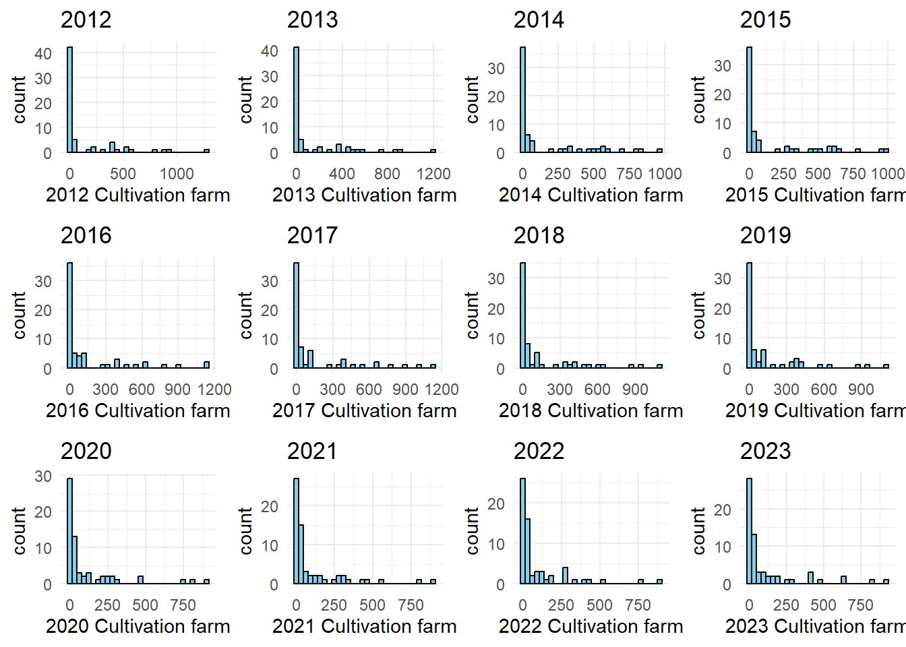
This code generates yearly histograms of “Cultivation farms” from 2012 to 2023, arranged in a grid layout. In the Shiny design, I will present these histograms, allowing users to explore the distribution of cultivation farms each year. Users will be able to select different years and compare the frequency distribution of cultivation farm counts over time.
plots_list <- list()
for (year in 2016:2023) {
p <- ggplot(enterprise, aes_string(x = paste0("`", year, "`"))) +
geom_histogram(fill = "skyblue", color = "black") +
ggtitle(paste(year)) +
theme_minimal()
plots_list[[as.character(year)]] <- p
}
arranged_plot <- ggarrange(
plots_list[["2016"]], plots_list[["2017"]],
plots_list[["2018"]], plots_list[["2019"]], plots_list[["2020"]],
plots_list[["2021"]], plots_list[["2022"]], plots_list[["2023"]],
ncol = 4, nrow = 2
)`stat_bin()` using `bins = 30`. Pick better value with `binwidth`.
`stat_bin()` using `bins = 30`. Pick better value with `binwidth`.
`stat_bin()` using `bins = 30`. Pick better value with `binwidth`.
`stat_bin()` using `bins = 30`. Pick better value with `binwidth`.
`stat_bin()` using `bins = 30`. Pick better value with `binwidth`.
`stat_bin()` using `bins = 30`. Pick better value with `binwidth`.
`stat_bin()` using `bins = 30`. Pick better value with `binwidth`.
`stat_bin()` using `bins = 30`. Pick better value with `binwidth`.final_plot <- annotate_figure(
arranged_plot,
top = text_grob("Number of Newly Established Enterprises (2016-2023)",
face = "bold", size = 14)
)
print(final_plot)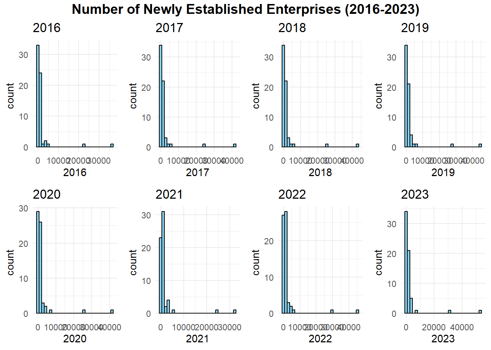
This code generates histograms for each year from 2016 to 2023, showing the distribution of newly established enterprises. It first iterates through each year, creating a histogram with ggplot and saving it in plots_list. Each plot represents a single year’s distribution, with a consistent color scheme and minimalist styling.
This enterprise data is displayed alongside the farm histogram to allow comparison between farm and enterprise development over the years, suggesting other avenues of growth. In Shiny, I’ll add enterprise as a selection option, enabling users to toggle between enterprise and farm data and explore shifts in development focus across time. This approach helps users visually assess potential transitions from agriculture to enterprise-based growth in each province.
farms %>%
select(`2012 Cultivation farm`, `2013 Cultivation farm`, `2014 Cultivation farm`,
`2015 Cultivation farm`, `2016 Cultivation farm`, `2017 Cultivation farm`,
`2018 Cultivation farm`, `2019 Cultivation farm`, `2020 Cultivation farm`,
`2021 Cultivation farm`, `2022 Cultivation farm`, `2023 Cultivation farm`) %>%
pivot_longer(cols = everything(), names_to = "Year", values_to = "Cultivation_Farms") %>%
mutate(Year = gsub(" Cultivation farm", "", Year)) %>%
ggplot(aes(x = Year, y = Cultivation_Farms)) +
geom_boxplot(fill = "orange") +
ggtitle("Boxplot of Cultivation Farms (2012-2023)") +
theme_minimal() +
theme(axis.text.x = element_text(angle = 45, hjust = 1)) +
xlab("Year") +
ylab("Cultivation Farms") %>%
print()$y
[1] "Cultivation Farms"
attr(,"class")
[1] "labels"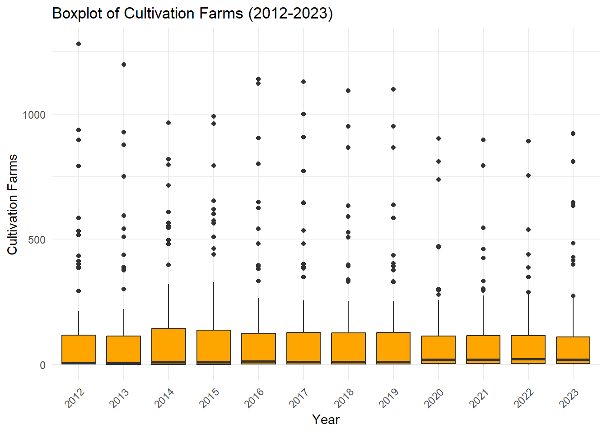
I’ll display this boxplot on the Shiny UI, with the variable “Year” on the x-axis and “Cultivation Farms” on the y-axis. This visualization allows users to explore the distribution of cultivation farms over time, observing any changes in median values, variability, and outliers. Users can get insights into how cultivation has varied from year to year.
enterprise %>%
pivot_longer(cols = `2016`:`2023`, names_to = "Year", values_to = "Value") %>%
ggplot(aes(x = Year, y = Value)) +
geom_boxplot(fill = "orange") +
ggtitle("Number of Newly Established Enterprises (2016-2023)") +
theme_minimal() +
theme(axis.text.x = element_text(angle = 45, hjust = 1)) +
xlab("Year") +
ylab("Number of Enterprises")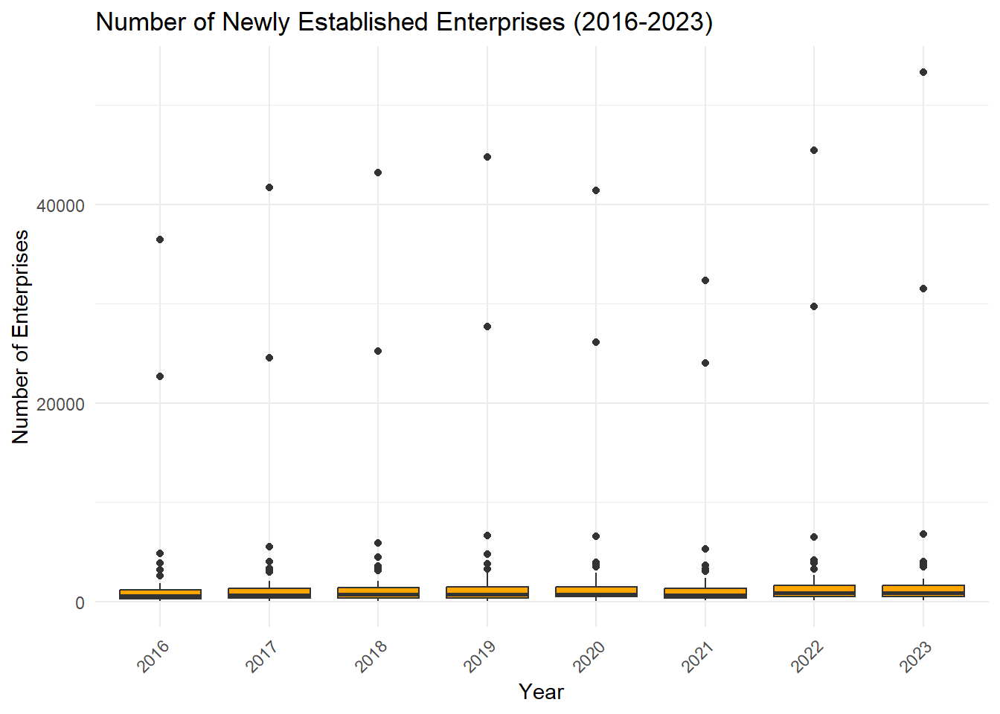
Positioning this enterprise boxplot alongside the farm boxplot in the Shiny app allows users to explore shifts in growth focus, comparing farm versus enterprise development over time. By including enterprise as a selectable option in the Shiny UI, users can toggle between the two datasets to observe and analyze trends, discovering insights into how regional development may be evolving from agriculture to business establishment in recent years.
plots_list <- list()
for (year in 2012:2023) {
p <- ggplot(farms, aes_string(x = paste0("`", year, " Cultivation PR`"))) +
geom_histogram(fill = "skyblue", color = "black") +
ggtitle(paste(year)) +
theme_minimal()
plots_list[[as.character(year)]] <- p
}
arranged_plot <- ggarrange(
plots_list[["2012"]], plots_list[["2013"]], plots_list[["2014"]],
plots_list[["2015"]], plots_list[["2016"]], plots_list[["2017"]],
plots_list[["2018"]], plots_list[["2019"]], plots_list[["2020"]],
plots_list[["2021"]], plots_list[["2022"]], plots_list[["2023"]],
ncol = 4, nrow = 3
)`stat_bin()` using `bins = 30`. Pick better value with `binwidth`.Warning: Removed 2 rows containing non-finite outside the scale range
(`stat_bin()`).`stat_bin()` using `bins = 30`. Pick better value with `binwidth`.Warning: Removed 2 rows containing non-finite outside the scale range
(`stat_bin()`).`stat_bin()` using `bins = 30`. Pick better value with `binwidth`.
`stat_bin()` using `bins = 30`. Pick better value with `binwidth`.
`stat_bin()` using `bins = 30`. Pick better value with `binwidth`.
`stat_bin()` using `bins = 30`. Pick better value with `binwidth`.
`stat_bin()` using `bins = 30`. Pick better value with `binwidth`.
`stat_bin()` using `bins = 30`. Pick better value with `binwidth`.
`stat_bin()` using `bins = 30`. Pick better value with `binwidth`.Warning: Removed 2 rows containing non-finite outside the scale range
(`stat_bin()`).`stat_bin()` using `bins = 30`. Pick better value with `binwidth`.Warning: Removed 2 rows containing non-finite outside the scale range
(`stat_bin()`).`stat_bin()` using `bins = 30`. Pick better value with `binwidth`.Warning: Removed 2 rows containing non-finite outside the scale range
(`stat_bin()`).`stat_bin()` using `bins = 30`. Pick better value with `binwidth`.Warning: Removed 2 rows containing non-finite outside the scale range
(`stat_bin()`).print(arranged_plot)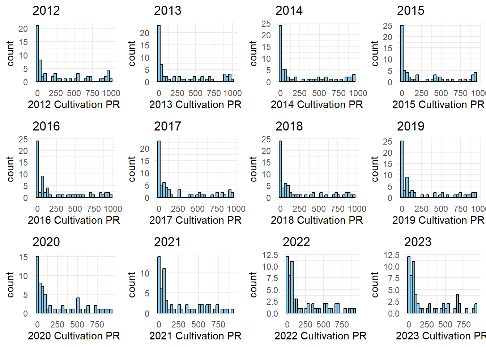
In Shiny, I’ll present these histograms of “Cultivation PR” (proportion per 1,000 farms) for each year from 2012 to 2023, enabling users to explore the cultivation farm proportion. By examining these histograms, users can see how the cultivation intensity varied year by year, which can highlight shifts in focus or growth in farming activity.
sapply(farms %>% select(contains("Cultivation PR")), function(x) sum(is.na(x)))2012 Cultivation PR 2013 Cultivation PR 2014 Cultivation PR 2015 Cultivation PR
2 2 0 0
2016 Cultivation PR 2017 Cultivation PR 2018 Cultivation PR 2019 Cultivation PR
0 0 0 0
2020 Cultivation PR 2021 Cultivation PR 2022 Cultivation PR 2023 Cultivation PR
2 2 2 2 This command checks for missing values in the “Cultivation PR” columns, ensuring data quality before display in Shiny.
farms <- farms %>%
mutate(across(where(is.numeric), ~replace_na(., 0)))Here, I replace any remaining missing values with 0 to ensure complete and consistent data visualization within Shiny, preventing display issues with NA values.
farms %>%
select(`2012 Cultivation PR`, `2013 Cultivation PR`, `2014 Cultivation PR`,
`2015 Cultivation PR`, `2016 Cultivation PR`, `2017 Cultivation PR`,
`2018 Cultivation PR`, `2019 Cultivation PR`, `2020 Cultivation PR`,
`2021 Cultivation PR`, `2022 Cultivation PR`, `2023 Cultivation PR`) %>%
pivot_longer(cols = everything(), names_to = "Year", values_to = "Cultivation_PR") %>%
mutate(Year = gsub(" Cultivation PR", "", Year)) %>%
ggplot(aes(x = Year, y = Cultivation_PR)) +
geom_boxplot(fill = "orange") +
ggtitle("Boxplot of Cultivation PR (2012-2023)") +
theme_minimal() +
theme(axis.text.x = element_text(angle = 45, hjust = 1)) +
xlab("Year") +
ylab("Cultivation PR (per 1000)") %>%
print()$y
[1] "Cultivation PR (per 1000)"
attr(,"class")
[1] "labels"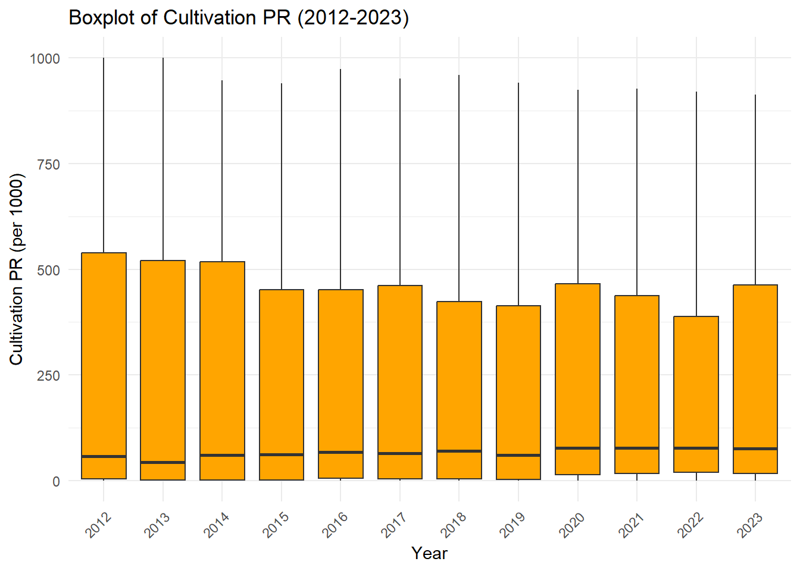
This boxplot for “Cultivation PR” will also be displayed in the Shiny app, allowing users to explore how the proportion of cultivation farms has changed over the years. With variables “Year” and “Cultivation PR,” users can observe fluctuations in farming intensity, identifying years with high or low cultivation proportions.
vietnam_farm <- farms %>%
left_join(vietnam_geo %>% select(-Code), by = c("Cities, provincies" = "Name"))
print(vietnam_farm)# A tibble: 63 × 110
`Cities, provincies` `2012 Total` `2012 Cultivation farm`
<chr> <dbl> <dbl>
1 Ha Noi 1233 11
2 Vinh Phuc 508 0
3 Bac Ninh 74 0
4 Quang Ninh 141 4
5 Hai Duong 506 3
6 Hai Phong 421 1
7 Hung Yen 353 4
8 Thai Binh 600 4
9 Ha Nam 240 6
10 Nam Dinh 366 2
# ℹ 53 more rows
# ℹ 107 more variables: `2012 Livestock farm` <dbl>, `2012 Fishing farm` <dbl>,
# `2012 Others(*)` <dbl>, `2013 Total` <dbl>, `2013 Cultivation farm` <dbl>,
# `2013 Livestock farm` <dbl>, `2013 Fishing farm` <dbl>,
# `2013 Others(*)` <dbl>, `2014 Total` <dbl>, `2014 Cultivation farm` <dbl>,
# `2014 Livestock farm` <dbl>, `2014 Fishing farm` <dbl>,
# `2014 Others(*)` <dbl>, `2015 Total` <dbl>, …By joining farms with vietnam_geo on matching province names, I create vietnam_farm, a comprehensive dataset combining both geographic and farm data. This joined dataset will be essential for displaying farm data across provinces on the Shiny map.
write_rds(vietnam_farm, "data/rds/vietnam_farm.rds")vietnam_enterprise <- enterprise %>%
left_join(vietnam_geo %>% select(-Code), by = c("Cities, provincies" = "Name"))
print(vietnam_enterprise)# A tibble: 63 × 10
`Cities, provincies` `2016` `2017` `2018` `2019` `2020` `2021` `2022` `2023`
<chr> <dbl> <dbl> <dbl> <dbl> <dbl> <dbl> <dbl> <dbl>
1 Ha Noi 22663 24545 25231 27711 26135 24026 29720 31512
2 Vinh Phuc 857 1250 1145 1194 1249 1214 1377 1523
3 Bac Ninh 1660 2046 2041 2405 2390 2368 2700 3473
4 Quang Ninh 1254 1593 1654 1605 1456 1455 1643 1689
5 Hai Duong 1213 1509 1549 1695 1600 1425 1579 1884
6 Hai Phong 2568 2979 3145 2943 2867 3034 3294 3523
7 Hung Yen 903 1311 1185 1194 1153 1331 1364 1594
8 Thai Binh 631 776 825 890 714 847 1130 1245
9 Ha Nam 481 628 596 684 682 666 796 771
10 Nam Dinh 675 799 818 796 794 906 1088 1283
# ℹ 53 more rows
# ℹ 1 more variable: geometry <MULTIPOLYGON [°]>vietnam_farm <- st_as_sf(vietnam_farm)
qtm(vietnam_farm, "2012 Cultivation PR")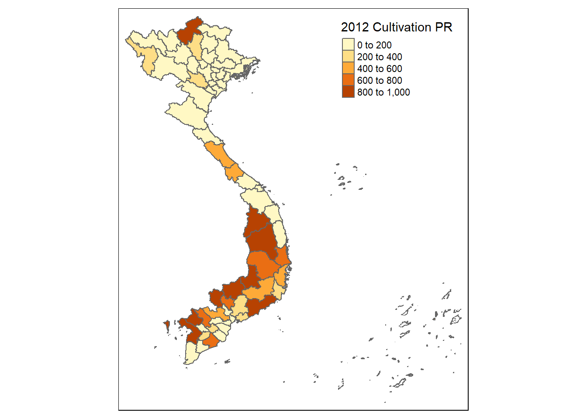
This code converts vietnam_farm into an sf spatial data frame and plots “2012 Cultivation PR” using qtm. In Shiny, this map will allow users to visually explore the cultivation farm proportion across different provinces, giving a clear geographic representation of farming intensity.
tm_shape(vietnam_farm) +
tm_polygons(c("2012 Total", "2012 Cultivation farm"),
style = "jenks",
title = c("Total Farms in 2012", "Cultivation Farms in 2012")) +
tm_facets(sync = TRUE, ncol = 2) +
tm_legend(legend.position = c("right", "bottom")) +
tm_layout(outer.margins = 0, asp = 0) 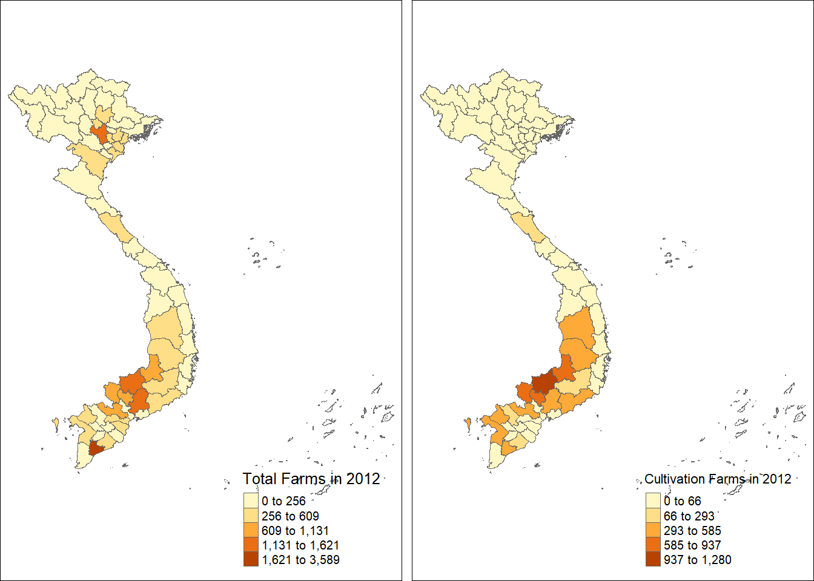
This faceted map displays both “Total Farms” and “Cultivation Farms” for 2012, using tm_facets to create a synchronized side-by-side view. I’ll present these maps in Shiny to allow users to visually compare the distribution of total versus cultivation farms across provinces. This visualization, along with the option to explore variables by year, will provide a comprehensive geographic overview in the Shiny app.
vietnam_enterprise <- st_as_sf(vietnam_enterprise)
tm_shape(vietnam_enterprise) +
tm_polygons(c("2016", "2017"),
style = "jenks",
title = c("New Enterprises (2016)", "New Enterprises (2017)")) +
tm_facets(sync = TRUE, ncol = 2) +
tm_legend(legend.position = c("right", "bottom")) +
tm_layout(outer.margins = 0, asp = 0)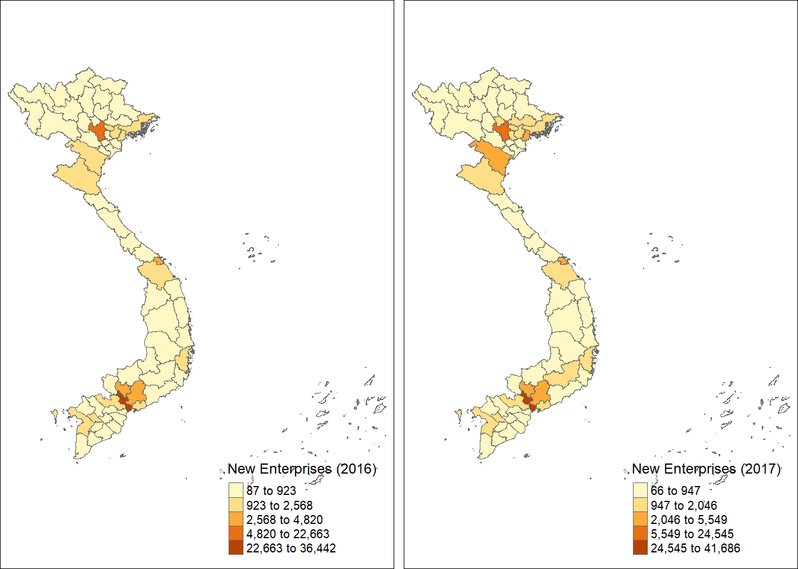
In Shiny, I’ll allow users to select different years to compare dynamically on a geographic map. Placed alongside farm distribution maps, these enterprise maps offer insights into potential regional shifts from agriculture to business growth. This setup lets users explore spatial differences year-to-year, revealing trends in economic development and regional focus over time.
enterprise_long <- enterprise %>%
pivot_longer(cols = `2016`:`2023`, names_to = "Year", values_to = "Enterprise_Count")
enterprise_long <- enterprise_long %>%
mutate(Year = as.numeric(Year))
ggplot(data = enterprise_long, aes(x = Year, y = Enterprise_Count, color = `Cities, provincies`, group = `Cities, provincies`)) +
geom_line() +
geom_point() +
ggtitle("Trend of Enterprises Over the Years (2016-2023)") +
xlab("Year") +
ylab("Enterprise Count") +
theme_minimal() +
theme(axis.text.x = element_text(angle = 45, hjust = 1))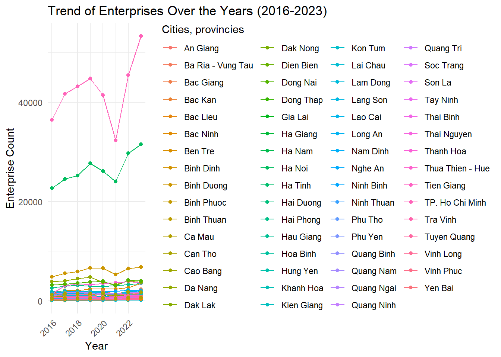
In the Shiny app, users will be able to select specific provinces to view enterprise trends over time, allowing them to focus on a particular province’s growth trajectory. By enabling this selection, users can explore how enterprise development has varied among provinces, revealing insights into regional economic changes. This interactive feature will enhance user engagement and allow for targeted analysis of provincial trends.
Correlation Analysis
When I design the Shiny UI, I will include the variable “year” to allow users to analyze and interact with correlation patterns over time.
farm_2012_pr_data <- vietnam_farm %>%
st_drop_geometry() %>%
select(`2012 Cultivation PR`, `2012 Livestock PR`, `2012 Fishing PR`, `2012 Others PR`) %>%
mutate(across(everything(), as.numeric))
colnames(farm_2012_pr_data) <- gsub("2012 ", "", colnames(farm_2012_pr_data))
cluster_vars_cor_pr <- cor(farm_2012_pr_data, use = "complete.obs")
corrplot.mixed(cluster_vars_cor_pr,
lower = "ellipse",
upper = "number",
tl.pos = "lt",
diag = "l",
tl.col = "black")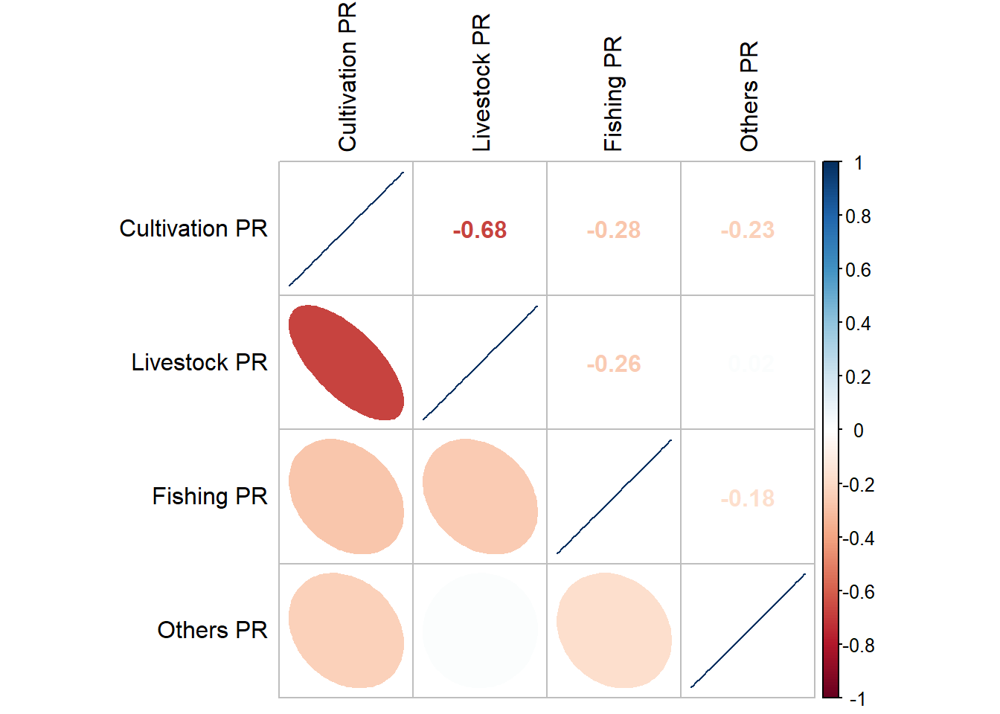
This code calculates the correlation matrix for various farm types’ proportions (Cultivation, Livestock, Fishing, Others) in 2012, removing geometry to focus on numeric data. Column names are cleaned to simplify variable names, and the corrplot.mixed function displays both numeric correlation values and ellipses, helping users easily interpret relationships between farm types. In Shiny, I’ll present this correlation plot to allow users to explore how different farming types relate to one another within a selected year.
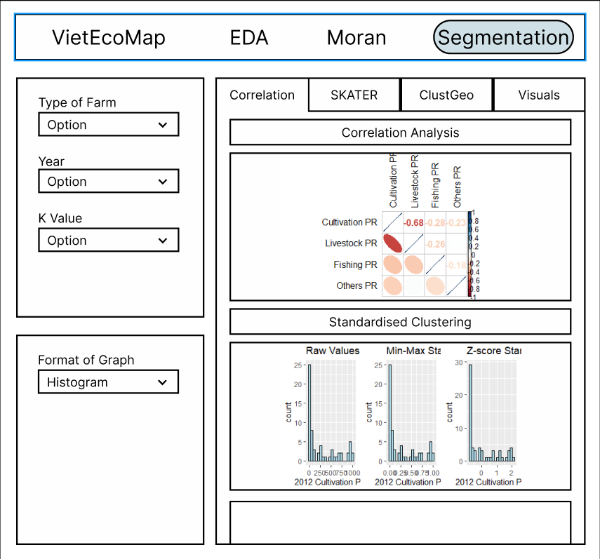
Data Standardisation
vietnam_farm_ict <- vietnam_farm %>%
st_drop_geometry() %>%
select_if(is.numeric) To prepare for standardization, this code removes geometry and retains only numeric data from vietnam_farm, creating vietnam_farm_ict. This selection forms the base data for applying both Min-Max and Z-score standardizations, which helps in visualizing different scaling methods and their impact on distribution.
Min-Max standardisation
vietnam_farm.std <- normalize(vietnam_farm_ict)
summary(vietnam_farm.std) 2012 Total 2012 Cultivation farm 2012 Livestock farm
Min. :0.000000 Min. :0.0000000 Min. :0.000000
1st Qu.:0.009195 1st Qu.:0.0007813 1st Qu.:0.007679
Median :0.039287 Median :0.0046875 Median :0.032423
Mean :0.100196 Mean :0.1098834 Mean :0.110149
3rd Qu.:0.141265 3rd Qu.:0.0910156 3rd Qu.:0.143771
Max. :1.000000 Max. :1.0000000 Max. :1.000000
2012 Fishing farm 2012 Others(*) 2013 Total 2013 Cultivation farm
Min. :0.000000 Min. :0.00000 Min. :0.00000 Min. :0.0000000
1st Qu.:0.000000 1st Qu.:0.00000 1st Qu.:0.01075 1st Qu.:0.0004177
Median :0.003717 Median :0.01005 Median :0.05995 Median :0.0041771
Mean :0.025320 Mean :0.07506 Mean :0.10672 Mean :0.1159645
3rd Qu.:0.010646 3rd Qu.:0.04020 3rd Qu.:0.15441 3rd Qu.:0.0948204
Max. :1.000000 Max. :1.00000 Max. :1.00000 Max. :1.0000000
2013 Livestock farm 2013 Fishing farm 2013 Others(*) 2014 Total
Min. :0.00000 Min. :0.000000 Min. :0.00000 Min. :0.00000
1st Qu.:0.01053 1st Qu.:0.000000 1st Qu.:0.00000 1st Qu.:0.01567
Median :0.03386 Median :0.003085 Median :0.01538 Median :0.08194
Mean :0.10995 Mean :0.025521 Mean :0.09223 Mean :0.12346
3rd Qu.:0.14597 3rd Qu.:0.011313 3rd Qu.:0.07692 3rd Qu.:0.17424
Max. :1.00000 Max. :1.000000 Max. :1.00000 Max. :1.00000
2014 Cultivation farm 2014 Livestock farm 2014 Fishing farm
Min. :0.0000000 Min. :0.000000 Min. :0.000000
1st Qu.:0.0005181 1st Qu.:0.008575 1st Qu.:0.000000
Median :0.0082902 Median :0.034302 Median :0.002391
Mean :0.1469693 Mean :0.095601 Mean :0.025184
3rd Qu.:0.1487047 3rd Qu.:0.128633 3rd Qu.:0.012470
Max. :1.0000000 Max. :1.000000 Max. :1.000000
2014 Others(*) 2015 Total 2015 Cultivation farm 2015 Livestock farm
Min. :0.000000 Min. :0.00000 Min. :0.0000000 Min. :0.000000
1st Qu.:0.005181 1st Qu.:0.02145 1st Qu.:0.0005051 1st Qu.:0.009313
Median :0.015544 Median :0.09725 Median :0.0090909 Median :0.030656
Mean :0.073443 Mean :0.15242 Mean :0.1471541 Mean :0.092423
3rd Qu.:0.075130 3rd Qu.:0.21775 3rd Qu.:0.1383838 3rd Qu.:0.126892
Max. :1.000000 Max. :1.00000 Max. :1.0000000 Max. :1.000000
2015 Fishing farm 2015 Others(*) 2016 Total 2016 Cultivation farm
Min. :0.00000 Min. :0.000000 Min. :0.00000 Min. :0.0000000
1st Qu.:0.00000 1st Qu.:0.004878 1st Qu.:0.02598 1st Qu.:0.0008772
Median :0.00290 Median :0.014634 Median :0.08346 Median :0.0114035
Mean :0.02745 Mean :0.074952 Mean :0.13925 Mean :0.1283208
3rd Qu.:0.01222 3rd Qu.:0.068293 3rd Qu.:0.22717 3rd Qu.:0.1087719
Max. :1.00000 Max. :1.000000 Max. :1.00000 Max. :1.0000000
2016 Livestock farm 2016 Fishing farm 2016 Others(*) 2017 Total
Min. :0.00000 Min. :0.000000 Min. :0.000000 Min. :0.00000
1st Qu.:0.01183 1st Qu.:0.002976 1st Qu.:0.002336 1st Qu.:0.02794
Median :0.03371 Median :0.026786 Median :0.009346 Median :0.08880
Mean :0.09765 Mean :0.111017 Mean :0.039052 Mean :0.14088
3rd Qu.:0.11872 3rd Qu.:0.095238 3rd Qu.:0.024533 3rd Qu.:0.22330
Max. :1.00000 Max. :1.000000 Max. :1.000000 Max. :1.00000
2017 Cultivation farm 2017 Livestock farm 2017 Fishing farm
Min. :0.000000 Min. :0.00000 Min. :0.000000
1st Qu.:0.000885 1st Qu.:0.01290 1st Qu.:0.002976
Median :0.009735 Median :0.03351 Median :0.032738
Mean :0.127813 Mean :0.09930 Mean :0.124102
3rd Qu.:0.112832 3rd Qu.:0.13523 3rd Qu.:0.095238
Max. :1.000000 Max. :1.00000 Max. :1.000000
2017 Others(*) 2018 Total 2018 Cultivation farm 2018 Livestock farm
Min. :0.000000 Min. :0.00000 Min. :0.0000000 Min. :0.00000
1st Qu.:0.000000 1st Qu.:0.03129 1st Qu.:0.0009141 1st Qu.:0.01451
Median :0.006637 Median :0.10828 Median :0.0091408 Median :0.04389
Mean :0.040877 Mean :0.15389 Mean :0.1233133 Mean :0.10999
3rd Qu.:0.028761 3rd Qu.:0.23267 3rd Qu.:0.1151737 3rd Qu.:0.15062
Max. :1.000000 Max. :1.00000 Max. :1.0000000 Max. :1.00000
2018 Fishing farm 2018 Others(*) 2019 Total 2019 Cultivation farm
Min. :0.000000 Min. :0.000000 Min. :0.00000 Min. :0.0000000
1st Qu.:0.002882 1st Qu.:0.000000 1st Qu.:0.02834 1st Qu.:0.0009107
Median :0.023055 Median :0.009217 Median :0.11659 Median :0.0100182
Mean :0.106674 Mean :0.043815 Mean :0.15080 Mean :0.1217220
3rd Qu.:0.093660 3rd Qu.:0.024193 3rd Qu.:0.22403 3rd Qu.:0.1165756
Max. :1.000000 Max. :1.000000 Max. :1.00000 Max. :1.0000000
2019 Livestock farm 2019 Fishing farm 2019 Others(*) 2020 Total
Min. :0.00000 Min. :0.000000 Min. :0.000000 Min. :0.00000
1st Qu.:0.01439 1st Qu.:0.002882 1st Qu.:0.000000 1st Qu.:0.03639
Median :0.04604 Median :0.023055 Median :0.009217 Median :0.10980
Mean :0.10880 Mean :0.106491 Mean :0.045900 Mean :0.15801
3rd Qu.:0.14878 3rd Qu.:0.096542 3rd Qu.:0.023041 3rd Qu.:0.22549
Max. :1.00000 Max. :1.000000 Max. :1.000000 Max. :1.00000
2020 Cultivation farm 2020 Livestock farm 2020 Fishing farm 2020 Others(*)
Min. :0.000000 Min. :0.00000 Min. :0.00000 Min. :0.00000
1st Qu.:0.003322 1st Qu.:0.01350 1st Qu.:0.00000 1st Qu.:0.00000
Median :0.021041 Median :0.05227 Median :0.01679 Median :0.02247
Mean :0.116103 Mean :0.12538 Mean :0.08025 Mean :0.10612
3rd Qu.:0.124585 3rd Qu.:0.13125 3rd Qu.:0.06996 3rd Qu.:0.11236
Max. :1.000000 Max. :1.00000 Max. :1.00000 Max. :1.00000
2021 Total 2021 Cultivation farm 2021 Livestock farm
Min. :0.00000 Min. :0.000000 Min. :0.00000
1st Qu.:0.04167 1st Qu.:0.003344 1st Qu.:0.01782
Median :0.11759 Median :0.022297 Median :0.05805
Mean :0.17468 Mean :0.115270 Mean :0.12542
3rd Qu.:0.24769 3rd Qu.:0.128205 3rd Qu.:0.13621
Max. :1.00000 Max. :1.000000 Max. :1.00000
2021 Fishing farm 2021 Others(*) 2022 Total 2022 Cultivation farm
Min. :0.0000000 Min. :0.00000 Min. :0.00000 Min. :0.000000
1st Qu.:0.0008224 1st Qu.:0.00000 1st Qu.:0.04577 1st Qu.:0.003363
Median :0.0164474 Median :0.01942 Median :0.13484 Median :0.024664
Mean :0.0734388 Mean :0.10726 Mean :0.18806 Mean :0.112232
3rd Qu.:0.0649671 3rd Qu.:0.08738 3rd Qu.:0.26698 3rd Qu.:0.128924
Max. :1.0000000 Max. :1.00000 Max. :1.00000 Max. :1.000000
2022 Livestock farm 2022 Fishing farm 2022 Others(*) 2023 Total
Min. :0.00000 Min. :0.0000000 Min. :0.00000 Min. :0.00000
1st Qu.:0.01655 1st Qu.:0.0008013 1st Qu.:0.00000 1st Qu.:0.04781
Median :0.05936 Median :0.0144231 Median :0.01923 Median :0.14446
Mean :0.12760 Mean :0.0747863 Mean :0.11355 Mean :0.20134
3rd Qu.:0.13955 3rd Qu.:0.0817308 3rd Qu.:0.10096 3rd Qu.:0.31027
Max. :1.00000 Max. :1.0000000 Max. :1.00000 Max. :1.00000
2023 Cultivation farm 2023 Livestock farm 2023 Fishing farm 2023 Others(*)
Min. :0.000000 Min. :0.00000 Min. :0.00000 Min. :0.00000
1st Qu.:0.002711 1st Qu.:0.01599 1st Qu.:0.00000 1st Qu.:0.00000
Median :0.021692 Median :0.05540 Median :0.01329 Median :0.03509
Mean :0.122646 Mean :0.12727 Mean :0.06952 Mean :0.11278
3rd Qu.:0.119306 3rd Qu.:0.14991 3rd Qu.:0.08272 3rd Qu.:0.09211
Max. :1.000000 Max. :1.00000 Max. :1.00000 Max. :1.00000
2012 Cultivation PR 2012 Livestock PR 2012 Fishing PR 2012 Others PR
Min. :0.000000 Min. :0.0000 Min. :0.00000 Min. :0.00000
1st Qu.:0.003592 1st Qu.:0.1262 1st Qu.:0.00000 1st Qu.:0.00000
Median :0.058139 Median :0.4783 Median :0.04912 Median :0.03667
Mean :0.276857 Mean :0.4694 Mean :0.15451 Mean :0.16009
3rd Qu.:0.539111 3rd Qu.:0.7819 3rd Qu.:0.16923 3rd Qu.:0.16954
Max. :1.000000 Max. :1.0000 Max. :1.00000 Max. :1.00000
2013 Cultivation PR 2013 Livestock PR 2013 Fishing PR 2013 Others PR
Min. :0.0000000 Min. :0.0000 Min. :0.00000 Min. :0.00000
1st Qu.:0.0007692 1st Qu.:0.1637 1st Qu.:0.00000 1st Qu.:0.00000
Median :0.0437956 Median :0.4576 Median :0.05271 Median :0.02632
Mean :0.2720218 Mean :0.4843 Mean :0.13529 Mean :0.15630
3rd Qu.:0.5211864 3rd Qu.:0.8117 3rd Qu.:0.14261 3rd Qu.:0.22118
Max. :1.0000000 Max. :1.0000 Max. :1.00000 Max. :1.00000
2014 Cultivation PR 2014 Livestock PR 2014 Fishing PR 2014 Others PR
Min. :0.000000 Min. :0.0000 Min. :0.00000 Min. :0.000000
1st Qu.:0.001281 1st Qu.:0.2084 1st Qu.:0.00000 1st Qu.:0.003282
Median :0.063622 Median :0.5771 Median :0.04351 Median :0.038228
Mean :0.282096 Mean :0.5405 Mean :0.13291 Mean :0.144265
3rd Qu.:0.547042 3rd Qu.:0.8709 3rd Qu.:0.11597 3rd Qu.:0.187017
Max. :1.000000 Max. :1.0000 Max. :1.00000 Max. :1.000000
2015 Cultivation PR 2015 Livestock PR 2015 Fishing PR 2015 Others PR
Min. :0.000000 Min. :0.0000 Min. :0.00000 Min. :0.000000
1st Qu.:0.001255 1st Qu.:0.2749 1st Qu.:0.00000 1st Qu.:0.005116
Median :0.065970 Median :0.6338 Median :0.03843 Median :0.055556
Mean :0.272500 Mean :0.5600 Mean :0.12213 Mean :0.187827
3rd Qu.:0.481251 3rd Qu.:0.8722 3rd Qu.:0.09858 3rd Qu.:0.261364
Max. :1.000000 Max. :1.0000 Max. :1.00000 Max. :1.000000
2016 Cultivation PR 2016 Livestock PR 2016 Fishing PR 2016 Others PR
Min. :0.000000 Min. :0.0000 Min. :0.000000 Min. :0.000000
1st Qu.:0.005843 1st Qu.:0.2901 1st Qu.:0.004281 1st Qu.:0.002937
Median :0.068469 Median :0.7162 Median :0.032834 Median :0.021423
Mean :0.249853 Mean :0.6012 Mean :0.110272 Mean :0.071175
3rd Qu.:0.463326 3rd Qu.:0.8927 3rd Qu.:0.110687 3rd Qu.:0.074641
Max. :1.000000 Max. :1.0000 Max. :1.000000 Max. :1.000000
2017 Cultivation PR 2017 Livestock PR 2017 Fishing PR 2017 Others PR
Min. :0.00000 Min. :0.0000 Min. :0.000000 Min. :0.00000
1st Qu.:0.00378 1st Qu.:0.2829 1st Qu.:0.004268 1st Qu.:0.00000
Median :0.06756 Median :0.7049 Median :0.031480 Median :0.01382
Mean :0.25321 Mean :0.5882 Mean :0.116152 Mean :0.08881
3rd Qu.:0.48539 3rd Qu.:0.8948 3rd Qu.:0.091937 3rd Qu.:0.06693
Max. :1.00000 Max. :1.0000 Max. :1.000000 Max. :1.00000
2018 Cultivation PR 2018 Livestock PR 2018 Fishing PR 2018 Others PR
Min. :0.000000 Min. :0.0000 Min. :0.000000 Min. :0.00000
1st Qu.:0.004927 1st Qu.:0.3234 1st Qu.:0.005248 1st Qu.:0.00000
Median :0.072482 Median :0.6965 Median :0.030015 Median :0.01476
Mean :0.241739 Mean :0.5927 Mean :0.107518 Mean :0.10894
3rd Qu.:0.441395 3rd Qu.:0.8863 3rd Qu.:0.097035 3rd Qu.:0.08908
Max. :1.000000 Max. :1.0000 Max. :1.000000 Max. :1.00000
2019 Cultivation PR 2019 Livestock PR 2019 Fishing PR 2019 Others PR
Min. :0.000000 Min. :0.0000 Min. :0.000000 Min. :0.00000
1st Qu.:0.003145 1st Qu.:0.3374 1st Qu.:0.003824 1st Qu.:0.00000
Median :0.063750 Median :0.6910 Median :0.028498 Median :0.01432
Mean :0.238869 Mean :0.5989 Mean :0.105171 Mean :0.11263
3rd Qu.:0.438990 3rd Qu.:0.8786 3rd Qu.:0.092836 3rd Qu.:0.08735
Max. :1.000000 Max. :1.0000 Max. :1.000000 Max. :1.00000
2020 Cultivation PR 2020 Livestock PR 2020 Fishing PR 2020 Others PR
Min. :0.00000 Min. :0.0000 Min. :0.00000 Min. :0.00000
1st Qu.:0.01447 1st Qu.:0.2644 1st Qu.:0.00000 1st Qu.:0.00000
Median :0.08328 Median :0.6348 Median :0.04222 Median :0.05104
Mean :0.25842 Mean :0.5523 Mean :0.13689 Mean :0.17761
3rd Qu.:0.50470 3rd Qu.:0.8064 3rd Qu.:0.11884 3rd Qu.:0.25183
Max. :1.00000 Max. :1.0000 Max. :1.00000 Max. :1.00000
2021 Cultivation PR 2021 Livestock PR 2021 Fishing PR 2021 Others PR
Min. :0.00000 Min. :0.0000 Min. :0.0000000 Min. :0.00000
1st Qu.:0.01811 1st Qu.:0.3058 1st Qu.:0.0006245 1st Qu.:0.00000
Median :0.08292 Median :0.6286 Median :0.0407631 Median :0.03155
Mean :0.25446 Mean :0.5479 Mean :0.1353759 Mean :0.16091
3rd Qu.:0.47135 3rd Qu.:0.7966 3rd Qu.:0.1324030 3rd Qu.:0.19928
Max. :1.00000 Max. :1.0000 Max. :1.0000000 Max. :1.00000
2022 Cultivation PR 2022 Livestock PR 2022 Fishing PR 2022 Others PR
Min. :0.00000 Min. :0.0000 Min. :0.0000000 Min. :0.00000
1st Qu.:0.02144 1st Qu.:0.3252 1st Qu.:0.0006252 1st Qu.:0.00000
Median :0.08465 Median :0.6341 Median :0.0414502 Median :0.01538
Mean :0.24510 Mean :0.5506 Mean :0.1352420 Mean :0.11489
3rd Qu.:0.42178 3rd Qu.:0.8138 3rd Qu.:0.1155287 3rd Qu.:0.13504
Max. :1.00000 Max. :1.0000 Max. :1.0000000 Max. :1.00000
2023 Cultivation PR 2023 Livestock PR 2023 Fishing PR 2023 Others PR
Min. :0.00000 Min. :0.0000 Min. :0.00000 Min. :0.00000
1st Qu.:0.01848 1st Qu.:0.3333 1st Qu.:0.00000 1st Qu.:0.00000
Median :0.08225 Median :0.5835 Median :0.04273 Median :0.02492
Mean :0.25285 Mean :0.5407 Mean :0.13393 Mean :0.12645
3rd Qu.:0.50624 3rd Qu.:0.8336 3rd Qu.:0.12952 3rd Qu.:0.13201
Max. :1.00000 Max. :1.0000 Max. :1.00000 Max. :1.00000 Applying Min-Max standardization scales the data to a range of 0 to 1, making it easier to compare variables with different units or ranges. The summary provides insights into how variables are rescaled. In Shiny, this standardization option will allow users to toggle between raw and normalized data views to understand how scaling affects the data distribution.
Z-score standardisation
vietnam_farm.z <- scale(vietnam_farm_ict)
describe(vietnam_farm.z) vars n mean sd median trimmed mad min max range
2012 Total 1 63 0 1 -0.39 -0.20 0.36 -0.65 5.83 6.47
2012 Cultivation farm 2 63 0 1 -0.49 -0.24 0.03 -0.51 4.17 4.68
2012 Livestock farm 3 63 0 1 -0.43 -0.20 0.25 -0.61 4.92 5.53
2012 Fishing farm 4 63 0 1 -0.17 -0.16 0.04 -0.20 7.72 7.92
2012 Others(*) 5 63 0 1 -0.34 -0.26 0.08 -0.40 4.90 5.29
2013 Total 6 63 0 1 -0.30 -0.19 0.54 -0.68 5.71 6.39
2013 Cultivation farm 7 63 0 1 -0.50 -0.24 0.03 -0.52 3.99 4.51
2013 Livestock farm 8 63 0 1 -0.43 -0.20 0.27 -0.63 5.07 5.69
2013 Fishing farm 9 63 0 1 -0.18 -0.16 0.04 -0.20 7.72 7.92
2013 Others(*) 10 63 0 1 -0.39 -0.25 0.12 -0.47 4.58 5.05
2014 Total 11 63 0 1 -0.24 -0.19 0.65 -0.72 5.14 5.86
2014 Cultivation farm 12 63 0 1 -0.54 -0.22 0.05 -0.57 3.31 3.88
2014 Livestock farm 13 63 0 1 -0.38 -0.19 0.28 -0.59 5.61 6.20
2014 Fishing farm 14 63 0 1 -0.18 -0.15 0.03 -0.20 7.74 7.94
2014 Others(*) 15 63 0 1 -0.35 -0.23 0.14 -0.44 5.57 6.01
2015 Total 16 63 0 1 -0.28 -0.19 0.64 -0.76 4.24 5.00
2015 Cultivation farm 17 63 0 1 -0.53 -0.22 0.05 -0.57 3.28 3.84
2015 Livestock farm 18 63 0 1 -0.38 -0.19 0.25 -0.57 5.55 6.12
2015 Fishing farm 19 63 0 1 -0.19 -0.16 0.03 -0.22 7.70 7.91
2015 Others(*) 20 63 0 1 -0.37 -0.23 0.13 -0.46 5.73 6.20
2016 Total 21 63 0 1 -0.32 -0.16 0.63 -0.80 4.94 5.73
2016 Cultivation farm 22 63 0 1 -0.48 -0.25 0.07 -0.53 3.59 4.12
2016 Livestock farm 23 63 0 1 -0.37 -0.21 0.26 -0.56 5.18 5.74
2016 Fishing farm 24 63 0 1 -0.41 -0.25 0.19 -0.54 4.34 4.88
2016 Others(*) 25 63 0 1 -0.23 -0.18 0.11 -0.30 7.46 7.77
2017 Total 26 63 0 1 -0.30 -0.15 0.68 -0.81 4.96 5.77
2017 Cultivation farm 27 63 0 1 -0.50 -0.25 0.06 -0.54 3.66 4.20
2017 Livestock farm 28 63 0 1 -0.38 -0.21 0.26 -0.57 5.17 5.74
2017 Fishing farm 29 63 0 1 -0.39 -0.25 0.21 -0.53 3.77 4.31
2017 Others(*) 30 63 0 1 -0.26 -0.20 0.07 -0.31 7.30 7.62
2018 Total 31 63 0 1 -0.25 -0.15 0.74 -0.84 4.61 5.45
2018 Cultivation farm 32 63 0 1 -0.50 -0.24 0.06 -0.54 3.84 4.39
2018 Livestock farm 33 63 0 1 -0.36 -0.19 0.32 -0.60 4.85 5.45
2018 Fishing farm 34 63 0 1 -0.42 -0.25 0.17 -0.53 4.47 5.00
2018 Others(*) 35 63 0 1 -0.26 -0.22 0.10 -0.32 7.05 7.37
2019 Total 36 63 0 1 -0.19 -0.16 0.76 -0.82 4.64 5.46
2019 Cultivation farm 37 63 0 1 -0.50 -0.24 0.07 -0.55 3.94 4.49
2019 Livestock farm 38 63 0 1 -0.35 -0.20 0.34 -0.60 4.91 5.51
2019 Fishing farm 39 63 0 1 -0.42 -0.25 0.17 -0.54 4.49 5.02
2019 Others(*) 40 63 0 1 -0.27 -0.22 0.10 -0.33 6.90 7.23
2020 Total 41 63 0 1 -0.27 -0.16 0.71 -0.89 4.75 5.64
2020 Cultivation farm 42 63 0 1 -0.44 -0.24 0.14 -0.54 4.09 4.63
2020 Livestock farm 43 63 0 1 -0.39 -0.21 0.37 -0.66 4.61 5.27
2020 Fishing farm 44 63 0 1 -0.39 -0.23 0.15 -0.50 5.69 6.19
2020 Others(*) 45 63 0 1 -0.43 -0.26 0.17 -0.55 4.61 5.16
2021 Total 46 63 0 1 -0.30 -0.16 0.70 -0.92 4.34 5.26
2021 Cultivation farm 47 63 0 1 -0.45 -0.24 0.16 -0.56 4.29 4.85
2021 Livestock farm 48 63 0 1 -0.36 -0.21 0.37 -0.66 4.63 5.29
2021 Fishing farm 49 63 0 1 -0.37 -0.23 0.16 -0.47 5.97 6.44
2021 Others(*) 50 63 0 1 -0.42 -0.26 0.14 -0.52 4.30 4.81
2022 Total 51 63 0 1 -0.27 -0.15 0.75 -0.94 4.07 5.01
2022 Cultivation farm 52 63 0 1 -0.44 -0.24 0.17 -0.56 4.41 4.97
2022 Livestock farm 53 63 0 1 -0.37 -0.20 0.41 -0.69 4.69 5.38
2022 Fishing farm 54 63 0 1 -0.39 -0.23 0.14 -0.49 6.01 6.50
2022 Others(*) 55 63 0 1 -0.44 -0.25 0.13 -0.53 4.17 4.70
2023 Total 56 63 0 1 -0.27 -0.15 0.76 -0.97 3.84 4.81
2023 Cultivation farm 57 63 0 1 -0.45 -0.24 0.14 -0.55 3.93 4.48
2023 Livestock farm 58 63 0 1 -0.40 -0.20 0.39 -0.70 4.81 5.51
2023 Fishing farm 59 63 0 1 -0.38 -0.22 0.13 -0.47 6.30 6.77
2023 Others(*) 60 63 0 1 -0.40 -0.24 0.26 -0.57 4.52 5.09
2012 Cultivation PR 61 63 0 1 -0.62 -0.14 0.25 -0.79 2.06 2.85
2012 Livestock PR 62 63 0 1 0.03 -0.01 1.40 -1.38 1.57 2.95
2012 Fishing PR 63 63 0 1 -0.42 -0.25 0.29 -0.62 3.39 4.01
2012 Others PR 64 63 0 1 -0.46 -0.23 0.20 -0.59 3.12 3.71
2013 Cultivation PR 65 63 0 1 -0.65 -0.14 0.19 -0.78 2.09 2.87
2013 Livestock PR 66 63 0 1 -0.08 -0.01 1.50 -1.42 1.51 2.93
2013 Fishing PR 67 63 0 1 -0.36 -0.25 0.34 -0.59 3.80 4.39
2013 Others PR 68 63 0 1 -0.54 -0.21 0.16 -0.64 3.48 4.13
2014 Cultivation PR 69 63 0 1 -0.61 -0.13 0.26 -0.79 2.02 2.81
2014 Livestock PR 70 63 0 1 0.11 0.03 1.39 -1.60 1.36 2.96
2014 Fishing PR 71 63 0 1 -0.39 -0.26 0.28 -0.59 3.82 4.41
2014 Others PR 72 63 0 1 -0.48 -0.23 0.26 -0.65 3.86 4.51
2015 Cultivation PR 73 63 0 1 -0.59 -0.15 0.28 -0.78 2.07 2.84
2015 Livestock PR 74 63 0 1 0.22 0.04 1.17 -1.67 1.32 2.99
2015 Fishing PR 75 63 0 1 -0.39 -0.25 0.27 -0.57 4.09 4.66
2015 Others PR 76 63 0 1 -0.50 -0.20 0.31 -0.71 3.05 3.76
2016 Cultivation PR 77 63 0 1 -0.55 -0.16 0.31 -0.75 2.26 3.01
2016 Livestock PR 78 63 0 1 0.34 0.06 1.08 -1.79 1.18 2.97
2016 Fishing PR 79 63 0 1 -0.41 -0.24 0.26 -0.58 4.70 5.29
2016 Others PR 80 63 0 1 -0.33 -0.23 0.21 -0.47 6.11 6.58
2017 Cultivation PR 81 63 0 1 -0.54 -0.16 0.29 -0.74 2.19 2.93
2017 Livestock PR 82 63 0 1 0.35 0.06 1.08 -1.76 1.23 2.99
2017 Fishing PR 83 63 0 1 -0.41 -0.25 0.23 -0.57 4.31 4.88
2017 Others PR 84 63 0 1 -0.40 -0.24 0.11 -0.48 4.92 5.40
2018 Cultivation PR 85 63 0 1 -0.51 -0.16 0.33 -0.73 2.30 3.04
2018 Livestock PR 86 63 0 1 0.32 0.06 1.14 -1.84 1.26 3.10
2018 Fishing PR 87 63 0 1 -0.40 -0.26 0.23 -0.55 4.56 5.10
2018 Others PR 88 63 0 1 -0.44 -0.25 0.10 -0.51 4.19 4.70
2019 Cultivation PR 89 63 0 1 -0.52 -0.17 0.28 -0.71 2.27 2.99
2019 Livestock PR 90 63 0 1 0.29 0.06 1.09 -1.86 1.25 3.11
2019 Fishing PR 91 63 0 1 -0.40 -0.26 0.22 -0.55 4.66 5.20
2019 Others PR 92 63 0 1 -0.45 -0.26 0.10 -0.51 4.05 4.57
2020 Cultivation PR 93 63 0 1 -0.55 -0.15 0.39 -0.81 2.33 3.14
2020 Livestock PR 94 63 0 1 0.26 0.05 1.16 -1.72 1.39 3.11
2020 Fishing PR 95 63 0 1 -0.39 -0.25 0.26 -0.57 3.59 4.15
2020 Others PR 96 63 0 1 -0.47 -0.21 0.28 -0.66 3.04 3.70
2021 Cultivation PR 97 63 0 1 -0.57 -0.14 0.41 -0.84 2.47 3.32
2021 Livestock PR 98 63 0 1 0.26 0.05 1.10 -1.77 1.46 3.24
2021 Fishing PR 99 63 0 1 -0.40 -0.25 0.26 -0.57 3.65 4.22
2021 Others PR 100 63 0 1 -0.51 -0.22 0.18 -0.63 3.30 3.93
2022 Cultivation PR 101 63 0 1 -0.54 -0.16 0.42 -0.82 2.53 3.35
2022 Livestock PR 102 63 0 1 0.27 0.05 1.06 -1.75 1.43 3.19
2022 Fishing PR 103 63 0 1 -0.40 -0.25 0.26 -0.57 3.67 4.24
2022 Others PR 104 63 0 1 -0.49 -0.23 0.11 -0.56 4.34 4.91
2023 Cultivation PR 105 63 0 1 -0.55 -0.15 0.39 -0.82 2.41 3.23
2023 Livestock PR 106 63 0 1 0.14 0.04 1.18 -1.72 1.46 3.18
2023 Fishing PR 107 63 0 1 -0.39 -0.25 0.27 -0.57 3.71 4.28
2023 Others PR 108 63 0 1 -0.45 -0.25 0.16 -0.56 3.88 4.44
skew kurtosis se
2012 Total 3.48 16.15 0.13
2012 Cultivation farm 2.24 4.73 0.13
2012 Livestock farm 2.85 9.72 0.13
2012 Fishing farm 7.31 53.39 0.13
2012 Others(*) 3.61 13.14 0.13
2013 Total 3.33 14.90 0.13
2013 Cultivation farm 2.14 4.07 0.13
2013 Livestock farm 2.85 10.01 0.13
2013 Fishing farm 7.30 53.31 0.13
2013 Others(*) 3.18 10.06 0.13
2014 Total 2.95 11.00 0.13
2014 Cultivation farm 1.71 1.74 0.13
2014 Livestock farm 3.46 14.92 0.13
2014 Fishing farm 7.36 54.01 0.13
2014 Others(*) 3.99 17.28 0.13
2015 Total 2.55 7.57 0.13
2015 Cultivation farm 1.77 2.07 0.13
2015 Livestock farm 3.63 15.57 0.13
2015 Fishing farm 7.24 52.70 0.13
2015 Others(*) 3.97 17.71 0.13
2016 Total 2.88 10.67 0.13
2016 Cultivation farm 2.17 3.98 0.13
2016 Livestock farm 3.57 14.32 0.13
2016 Fishing farm 2.57 6.34 0.13
2016 Others(*) 6.63 46.30 0.13
2017 Total 2.86 10.67 0.13
2017 Cultivation farm 2.09 3.54 0.13
2017 Livestock farm 3.48 13.76 0.13
2017 Fishing farm 2.45 5.36 0.13
2017 Others(*) 6.26 42.30 0.13
2018 Total 2.77 9.81 0.13
2018 Cultivation farm 2.18 4.17 0.13
2018 Livestock farm 3.46 13.50 0.13
2018 Fishing farm 2.62 6.77 0.13
2018 Others(*) 5.75 36.55 0.13
2019 Total 2.87 10.38 0.13
2019 Cultivation farm 2.26 4.74 0.13
2019 Livestock farm 3.45 13.46 0.13
2019 Fishing farm 2.62 6.77 0.13
2019 Others(*) 5.47 33.47 0.13
2020 Total 2.52 8.44 0.13
2020 Cultivation farm 2.57 6.39 0.13
2020 Livestock farm 2.79 8.88 0.13
2020 Fishing farm 3.56 15.29 0.13
2020 Others(*) 2.63 7.11 0.13
2021 Total 2.20 6.29 0.13
2021 Cultivation farm 2.52 6.54 0.13
2021 Livestock farm 2.77 8.75 0.13
2021 Fishing farm 3.89 18.35 0.13
2021 Others(*) 2.72 7.39 0.13
2022 Total 2.07 5.58 0.13
2022 Cultivation farm 2.57 6.87 0.13
2022 Livestock farm 2.58 7.78 0.13
2022 Fishing farm 3.92 18.85 0.13
2022 Others(*) 2.67 7.12 0.13
2023 Total 1.68 3.26 0.13
2023 Cultivation farm 2.30 4.72 0.13
2023 Livestock farm 2.47 7.40 0.13
2023 Fishing farm 4.32 22.77 0.13
2023 Others(*) 2.53 6.69 0.13
2012 Cultivation PR 0.93 -0.73 0.13
2012 Livestock PR 0.03 -1.47 0.13
2012 Fishing PR 2.03 3.14 0.13
2012 Others PR 1.90 2.43 0.13
2013 Cultivation PR 0.92 -0.73 0.13
2013 Livestock PR 0.01 -1.47 0.13
2013 Fishing PR 2.21 4.18 0.13
2013 Others PR 1.69 1.99 0.13
2014 Cultivation PR 0.89 -0.81 0.13
2014 Livestock PR -0.21 -1.47 0.13
2014 Fishing PR 2.27 4.36 0.13
2014 Others PR 2.00 3.49 0.13
2015 Cultivation PR 1.00 -0.52 0.13
2015 Livestock PR -0.30 -1.38 0.13
2015 Fishing PR 2.34 5.04 0.13
2015 Others PR 1.59 1.61 0.13
2016 Cultivation PR 1.09 -0.37 0.13
2016 Livestock PR -0.47 -1.31 0.13
2016 Fishing PR 2.61 7.29 0.13
2016 Others PR 4.15 20.58 0.13
2017 Cultivation PR 1.10 -0.38 0.13
2017 Livestock PR -0.41 -1.36 0.13
2017 Fishing PR 2.39 5.45 0.13
2017 Others PR 3.12 10.55 0.13
2018 Cultivation PR 1.16 -0.24 0.13
2018 Livestock PR -0.40 -1.28 0.13
2018 Fishing PR 2.65 6.94 0.13
2018 Others PR 2.52 6.05 0.13
2019 Cultivation PR 1.18 -0.22 0.13
2019 Livestock PR -0.44 -1.25 0.13
2019 Fishing PR 2.69 7.41 0.13
2019 Others PR 2.43 5.37 0.13
2020 Cultivation PR 1.01 -0.47 0.13
2020 Livestock PR -0.44 -1.22 0.13
2020 Fishing PR 2.32 4.62 0.13
2020 Others PR 1.64 1.58 0.13
2021 Cultivation PR 1.00 -0.44 0.13
2021 Livestock PR -0.41 -1.14 0.13
2021 Fishing PR 2.40 5.03 0.13
2021 Others PR 1.86 2.61 0.13
2022 Cultivation PR 1.11 -0.12 0.13
2022 Livestock PR -0.41 -1.15 0.13
2022 Fishing PR 2.39 5.02 0.13
2022 Others PR 2.38 5.85 0.13
2023 Cultivation PR 1.04 -0.38 0.13
2023 Livestock PR -0.29 -1.21 0.13
2023 Fishing PR 2.34 4.82 0.13
2023 Others PR 2.26 4.50 0.13Z-score standardization adjusts each variable to have a mean of 0 and a standard deviation of 1. This method is useful for comparing variables on a common scale without the influence of original units. In Shiny, users will be able to view data using this standardization method, making it easier to detect outliers or extreme values across farm types.
Visualising the standardised clustering variables
To provide users with a complete understanding of the raw and standardized values, I plan to incorporate the options “type of farm,” “year,” and “selection” (histogram or density) into the Shiny UI.
r <- ggplot(data = vietnam_farm_ict,
aes(x = `2012 Cultivation PR`)) +
geom_histogram(bins = 20,
color = "black",
fill = "light blue") +
ggtitle("Raw Values (without Standardization)")
vietnam_farm_std_df <- as.data.frame(vietnam_farm.std)
s <- ggplot(data = vietnam_farm_std_df,
aes(x = `2012 Cultivation PR`)) +
geom_histogram(bins = 20,
color = "black",
fill = "light blue") +
ggtitle("Min-Max Standardization")
vietnam_farm_z_df <- as.data.frame(vietnam_farm.z)
z <- ggplot(data = vietnam_farm_z_df,
aes(x = `2012 Cultivation PR`)) +
geom_histogram(bins = 20,
color = "black",
fill = "light blue") +
ggtitle("Z-score Standardization")
ggarrange(r, s, z,
ncol = 3,
nrow = 1)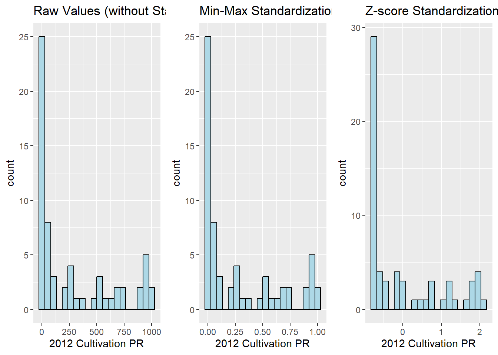
Here, histograms compare the distribution of “Cultivation PR” for 2012 under three conditions: raw values, Min-Max standardized, and Z-score standardized. In the Shiny UI, I’ll present these options to allow users to view the impact of different standardization methods on the data. This visualization will help users understand how scaling changes the data’s spread and enables them to select the most informative view for their analysis.
r <- ggplot(data = vietnam_farm_ict,
aes(x = `2012 Cultivation PR`)) +
geom_density(color = "black",
fill = "light blue") +
ggtitle("Raw Values (without Standardization)")
vietnam_farm_std_df <- as.data.frame(vietnam_farm.std)
s <- ggplot(data = vietnam_farm_std_df,
aes(x = `2012 Cultivation PR`)) +
geom_density(color = "black",
fill = "light blue") +
ggtitle("Min-Max Standardization")
vietnam_farm_z_df <- as.data.frame(vietnam_farm.z)
z <- ggplot(data = vietnam_farm_z_df,
aes(x = `2012 Cultivation PR`)) +
geom_density(color = "black",
fill = "light blue") +
ggtitle("Z-score Standardization")
ggarrange(r, s, z,
ncol = 3,
nrow = 1)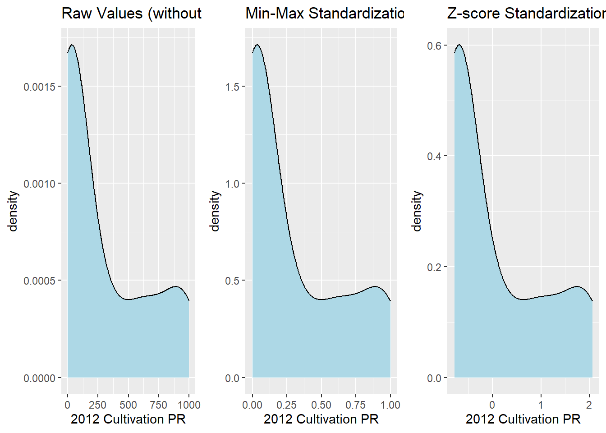
Similar to the histograms, these density plots display the distribution of “Cultivation PR” for 2012 under raw, Min-Max, and Z-score standardizations. In Shiny, I’ll offer a choice between histogram and density plot types so users can explore the data distribution in the format that best suits their analysis. These density plots provide a smoother view of data spread, aiding users in understanding variability and data concentration more intuitively.
Computing proximity matrix
When designing the Shiny UI, I’ll include the variable “year,” allowing users to explore data clustering for different years.
vietnam_farm_ict_2012 <- vietnam_farm %>%
st_drop_geometry() %>%
select(matches("^2012.*(PR|farm|Others\\(\\*\\))"))This code creates a subset of vietnam_farm containing only 2012 data for variables related to farm counts and proportions. Removing geometry with st_drop_geometry() makes it easier to compute distances for numeric data only.
proxmat <- dist(vietnam_farm_ict_2012, method = 'euclidean')Here, I calculate a proximity matrix using Euclidean distance, which measures similarity across provinces based on their farm metrics. This proximity matrix is foundational for clustering analysis in Shiny, helping users see how similar or different provinces are from each other based on the chosen year.
Computing hierarchical clustering
hclust_ward <- hclust(proxmat, method = 'ward.D')Using the ward.D method, this line creates a hierarchical clustering model based on the computed proximity matrix. The Ward method minimizes variance within clusters, making it ideal for grouping provinces with similar farm characteristics.
Selecting the optimal clustering algorithm
m <- c("average", "single", "complete", "ward")
names(m) <- c("average", "single", "complete", "ward")
ac <- function(x) {
agnes(vietnam_farm_ict_2012, method = x)$ac
}
ac_values <- map_dbl(m, ac)
print(ac_values) average single complete ward
0.9311650 0.9302807 0.9326505 0.9507638 To identify the best clustering method, I calculate the agglomerative coefficient (ac) for multiple algorithms (average, single, complete, and ward). Higher ac values indicate more compact clusters. In Shiny, users will be able to choose their preferred clustering method based on these coefficients, helping them explore the segmentation of provinces under different methods.
Determining Optimal Clusters
set.seed(12345)
gap_stat <- clusGap(vietnam_farm_ict_2012,
FUN = hcut,
nstart = 25,
K.max = 10,
B = 50)
print(gap_stat, method = "firstmax")Clustering Gap statistic ["clusGap"] from call:
clusGap(x = vietnam_farm_ict_2012, FUNcluster = hcut, K.max = 10, B = 50, nstart = 25)
B=50 simulated reference sets, k = 1..10; spaceH0="scaledPCA"
--> Number of clusters (method 'firstmax'): 10
logW E.logW gap SE.sim
[1,] 9.550950 10.120713 0.5697632 0.03462151
[2,] 9.273024 9.865547 0.5925228 0.03516704
[3,] 9.136299 9.754807 0.6185080 0.02895591
[4,] 8.955791 9.669456 0.7136646 0.02807787
[5,] 8.823899 9.597481 0.7735820 0.02647654
[6,] 8.717810 9.535364 0.8175540 0.02630438
[7,] 8.610772 9.478403 0.8676310 0.02645239
[8,] 8.520614 9.426002 0.9053875 0.02772165
[9,] 8.443205 9.376155 0.9329498 0.02824257
[10,] 8.349777 9.329776 0.9799991 0.02918417fviz_gap_stat(gap_stat)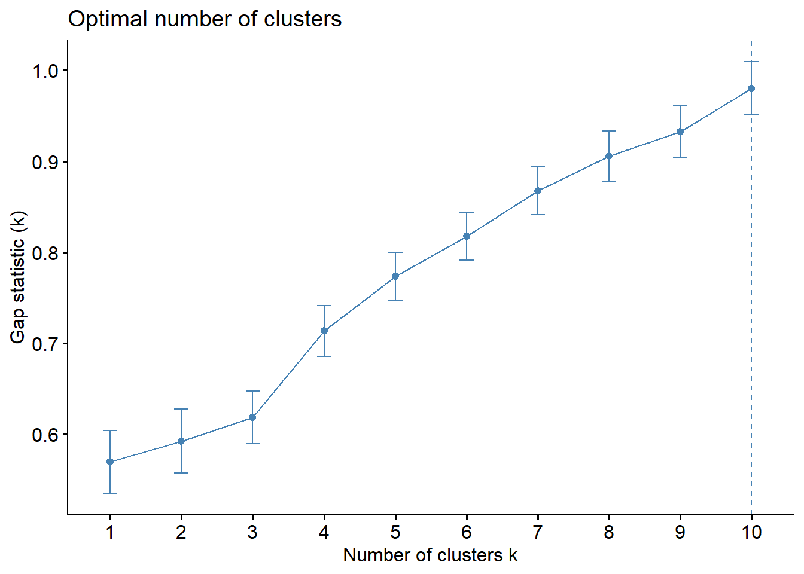
The clusGap function uses gap statistics to determine the optimal number of clusters (K) by comparing clustering quality across different K values. In Shiny, I’ll include the option to adjust K values, allowing users to view how segmentation quality changes and helping them select an ideal number of clusters based on the gap statistic plot.

Interpreting the dendrograms
When designing the Shiny UI, I will include the variable: k value and variable: year to enable users to explore clustering results in detail.
plot(hclust_ward, labels = vietnam_farm$`Cities, provincies`, cex = 0.7)
rect.hclust(hclust_ward,
k = 6,
border = 2:5)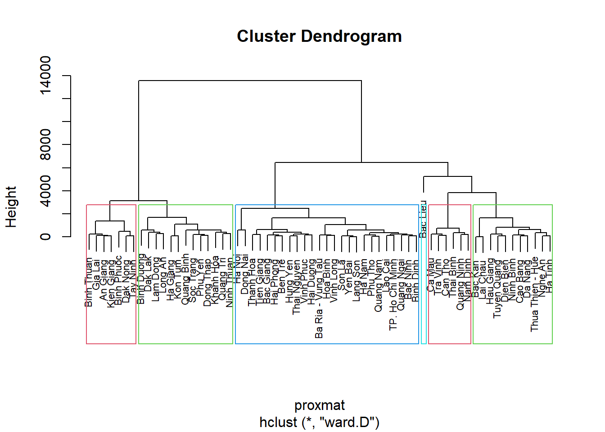
The dendrogram plot visualizes hierarchical clustering, with rectangles drawn around six clusters to show grouping. In Shiny, I’ll include adjustable K values, allowing users to choose the number of clusters (K) interactively and visualize how provinces group under different K values.
vietnam_farm_ict_mat <- data.matrix(vietnam_farm_ict_2012)This line converts the vietnam_farm_ict_2012 data frame into a matrix format for use in clustering and heatmap visualization.
Plotting interactive cluster heatmap using heatmaply()
When designing the Shiny UI, I will include variable: k value and variable: year to allow users to customize the heatmap view.
vietnam_farm_ict_pr_2012 <- vietnam_farm %>%
st_drop_geometry() %>%
select(matches("^2012.*PR$")) %>%
mutate(across(everything(), ~replace_na(as.numeric(.), 0)))
rownames(vietnam_farm_ict_pr_2012) <- vietnam_farm$`Cities, provincies`Warning: Setting row names on a tibble is deprecated.vietnam_farm_ict_pr_2012_std <- normalize(vietnam_farm_ict_pr_2012)
heatmaply(
vietnam_farm_ict_pr_2012_std,
Colv = NA,
dist_method = "euclidean",
hclust_method = "ward.D",
seriate = "OLO",
colors = Blues,
k_row = 6,
margins = c(NA, 200, 60, NA),
fontsize_row = 4,
fontsize_col = 5,
main = "Geographic Segmentation of Vietnam Farms by ICT Indicators (2012)",
xlab = "ICT Indicators",
ylab = "Provinces of Vietnam"
)In this heatmap, the selected farm proportions are normalized for 2012, and a Ward hierarchical clustering model is applied. The heatmap groups similar provinces based on ICT indicators and displays the intensity of each metric by color. Within the Shiny UI, I’ll allow users to adjust K values and explore clustering structures interactively, making it easy to identify similar clusters among provinces visually.
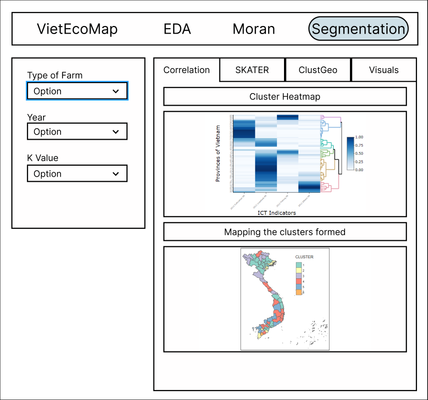
Mapping the clusters formed
When designing the Shiny UI, I will include options for variable: k value and variable: year, allowing users to dynamically adjust the number of clusters and explore clusters across different years.
groups <- as.factor(cutree(hclust_ward, k=6))This line creates a grouping variable (groups) by cutting the hierarchical clustering dendrogram at K=6 clusters, assigning each province to one of the clusters.
vietnam_farm_cluster <- cbind(vietnam_farm, as.matrix(groups)) %>%
rename(`CLUSTER`=`as.matrix.groups.`)Next, I add the groups variable to vietnam_farm, renaming it as CLUSTER. This combined data frame (vietnam_farm_cluster) now includes cluster assignments, making it ready for spatial visualization.
qtm(vietnam_farm_cluster, "CLUSTER")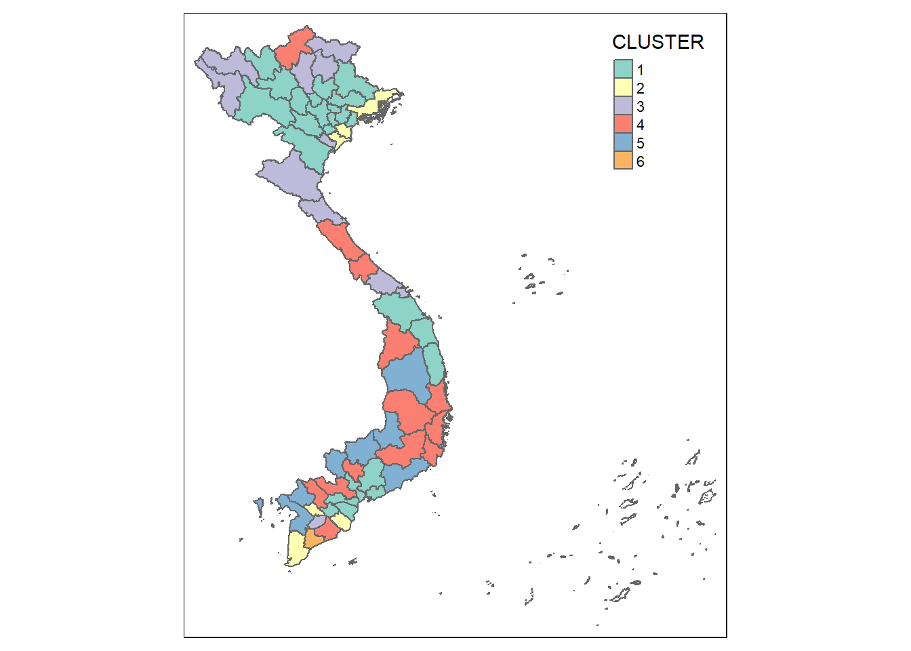
Using qtm, I map the clusters for visualization. In Shiny, this map will allow users to view how provinces are grouped based on farm characteristics for a selected year, with an adjustable K value so users can see how different cluster numbers impact segmentation.
Spatially Constrained Clustering: SKATER approach
The SKATER approach adds spatial constraints to clustering, ensuring clusters are contiguous geographically, which is useful in spatial analysis.
vietnam_farm_sp <- as_Spatial(vietnam_farm)To work with SKATER, the vietnam_farm dataset is converted into a spatial format (vietnam_farm_sp), making it compatible with functions that require spatial data structure.
Computing Neighbour List
vietnam_farm.nb <- poly2nb(vietnam_farm_sp)
summary(vietnam_farm.nb)Neighbour list object:
Number of regions: 63
Number of nonzero links: 270
Percentage nonzero weights: 6.802721
Average number of links: 4.285714
Link number distribution:
2 3 4 5 6 7 8
7 12 19 11 10 3 1
7 least connected regions:
22 27 28 29 30 32 63 with 2 links
1 most connected region:
1 with 8 linksThis computes the neighborhood list for each province using adjacency, helping to establish spatial relationships necessary for the SKATER algorithm. In Shiny, this process allows for geographically informed clustering based on the provinces’ proximity to each other.
coords <- st_coordinates(
st_centroid(st_geometry(vietnam_farm)))This code calculates the centroid coordinates of each province, used to assess spatial relationships and visualize each cluster’s spatial configuration accurately.
Computing minimum spanning tree
lcosts <- nbcosts(vietnam_farm.nb, vietnam_farm_ict_2012)The nbcosts function calculates edge costs based on Euclidean distances, indicating the cost of connecting each province to its neighbors. This will help in creating a minimum spanning tree for clustering.
vietnam_farm.w <- nb2listw(vietnam_farm.nb,
lcosts,
style="B")
summary(vietnam_farm.w)Characteristics of weights list object:
Neighbour list object:
Number of regions: 63
Number of nonzero links: 270
Percentage nonzero weights: 6.802721
Average number of links: 4.285714
Link number distribution:
2 3 4 5 6 7 8
7 12 19 11 10 3 1
7 least connected regions:
22 27 28 29 30 32 63 with 2 links
1 most connected region:
1 with 8 links
Weights style: B
Weights constants summary:
n nn S0 S1 S2
B 63 3969 202988 463689991 3529071846Using the neighborhood list and calculated costs, I create a spatial weights list (vietnam_farm.w). The weights define connectivity and are crucial for forming the minimum spanning tree in the SKATER method.
vietnam_farm.mst <- mstree(vietnam_farm.w)The minimum spanning tree (vietnam_farm.mst) is created, providing the basis for spatially constrained clusters by ensuring that clusters are spatially connected.
Computing spatially constrained clusters using SKATER method
When designing the Shiny UI, I will include variable: year and selection of ncuts to allow users to interactively select both the year and the number of clusters they wish to analyze.
clust <- spdep::skater(edges = vietnam_farm.mst[,1:2],
data = vietnam_farm_ict_2012,
method = "euclidean",
ncuts = 5)Using the SKATER method, spatially constrained clusters are created based on the minimum spanning tree, using Euclidean distance to determine the cost of connecting provinces. By including ncuts as a selectable parameter in Shiny, users can explore how changing the number of clusters impacts spatial segmentation. This flexibility allows them to see various cluster configurations and observe how spatial constraints shape cluster formation across different parameter choices.
Visualising the clusters in choropleth map
When designing the Shiny UI, I will include variable: year so users can interactively select the year for analysis and variable: K value to adjust the number of clusters.
groups_mat <- as.matrix(clust$groups)
vietnam_farm_spatialcluster <- cbind(vietnam_farm_cluster, as.factor(groups_mat)) %>%
rename(`SP_CLUSTER`=`as.factor.groups_mat.`)
qtm(vietnam_farm_spatialcluster, "SP_CLUSTER")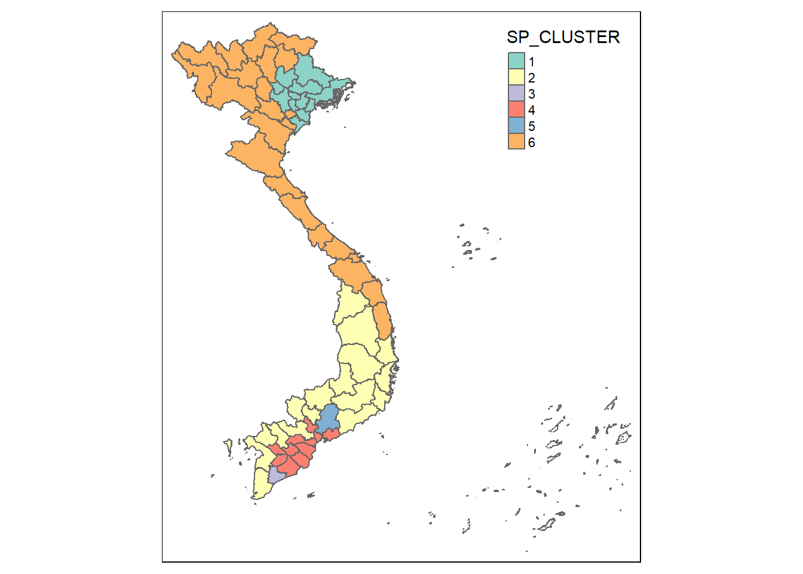
This code binds the spatially constrained cluster groups to the data and renames the cluster column as SP_CLUSTER. The qtm function then visualizes these clusters, allowing users to see spatial cluster distributions directly on the map.
hclust.map <- qtm(vietnam_farm_cluster,
"CLUSTER") +
tm_borders(alpha = 0.5)
shclust.map <- qtm(vietnam_farm_spatialcluster,
"SP_CLUSTER") +
tm_borders(alpha = 0.5)
tmap_arrange(hclust.map, shclust.map,
asp=NA, ncol=2)Warning: One tm layer group has duplicated layer types, which are omitted. To
draw multiple layers of the same type, use multiple layer groups (i.e. specify
tm_shape prior to each of them).
Warning: One tm layer group has duplicated layer types, which are omitted. To
draw multiple layers of the same type, use multiple layer groups (i.e. specify
tm_shape prior to each of them).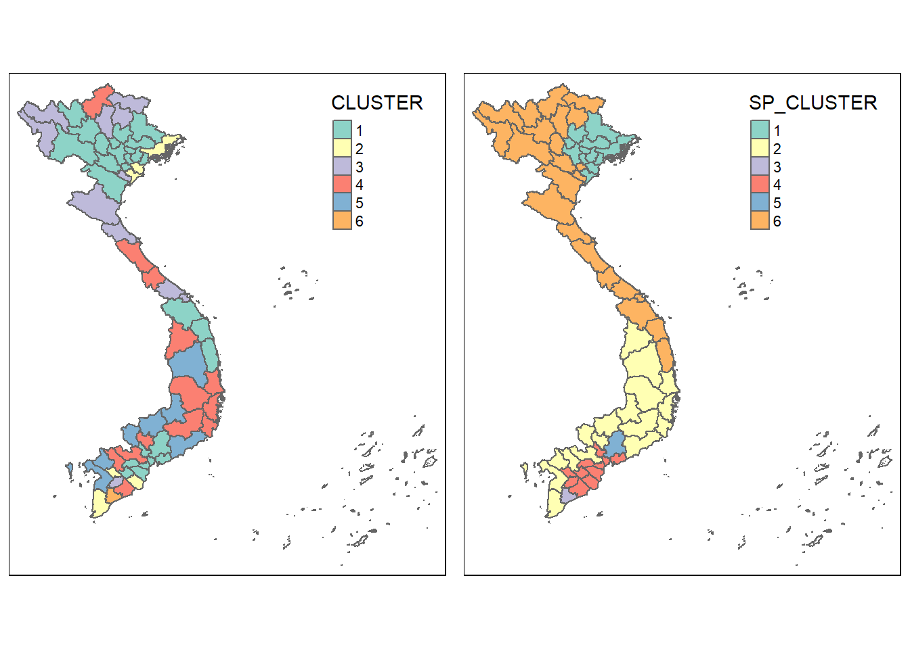
Using tmap_arrange, I display both the regular and spatially constrained clusters side-by-side, providing users with a comparative view of the cluster types for a given year. The Shiny app will feature year and K value selectors to let users see how clusters vary by different configurations.
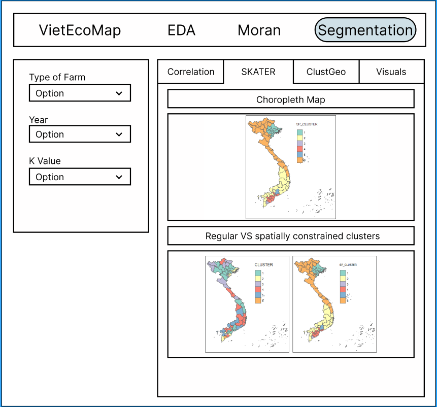
Spatially Constrained Clustering: ClustGeo Method
Ward-like hierarchical clustering: ClustGeo
In the Shiny UI, I will include variable: year and variable: K value so users can explore different years and adjust the number of clusters.
nongeo_cluster <- hclustgeo(proxmat)
plot(nongeo_cluster, cex = 0.5)
rect.hclust(nongeo_cluster,
k = 6,
border = 2:5)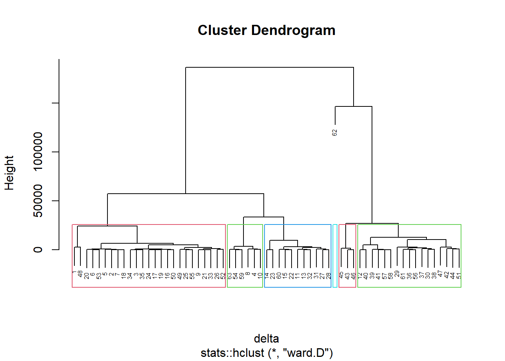
The hclustgeo function performs hierarchical clustering based on the proximity matrix, producing a dendrogram. Users can select K values in Shiny to visualize different clustering arrangements on the dendrogram, adjusting to see various levels of grouping across the chosen year.
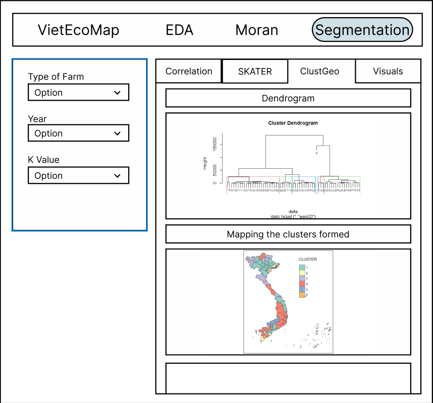
Mapping the clusters formed
groups <- as.factor(cutree(nongeo_cluster, k=6))vietnam_farm_ngeo_cluster <- cbind(vietnam_farm, as.matrix(groups)) %>%
rename(`CLUSTER` = `as.matrix.groups.`)This code assigns each province to a cluster (based on K=6) and renames the column CLUSTER, allowing us to map and display the clusters in Shiny with an adjustable K value and year for user-driven exploration.
qtm(vietnam_farm_ngeo_cluster, "CLUSTER")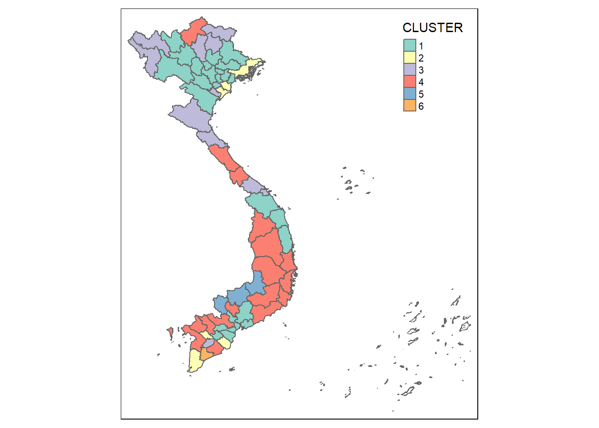
The qtm function visualizes these ClustGeo-based clusters, showing spatially relevant groupings across provinces.
Spatially Constrained Hierarchical Clustering
dist <- st_distance(vietnam_farm, vietnam_farm)
distmat <- as.dist(dist)This line calculates spatial distances between provinces, forming a distance matrix essential for combining spatial constraints with ClustGeo clustering.
cr <- choicealpha(proxmat, distmat, range.alpha = seq(0, 1, 0.1), K=6, graph = TRUE)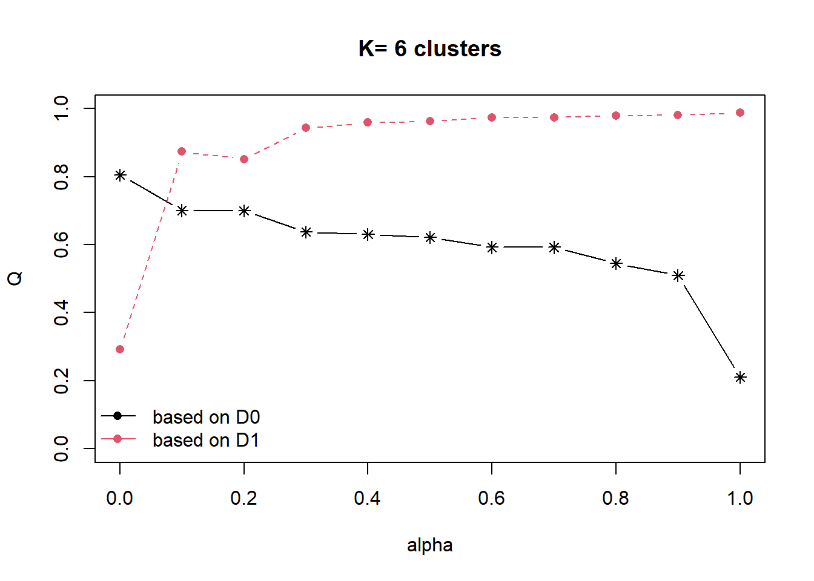
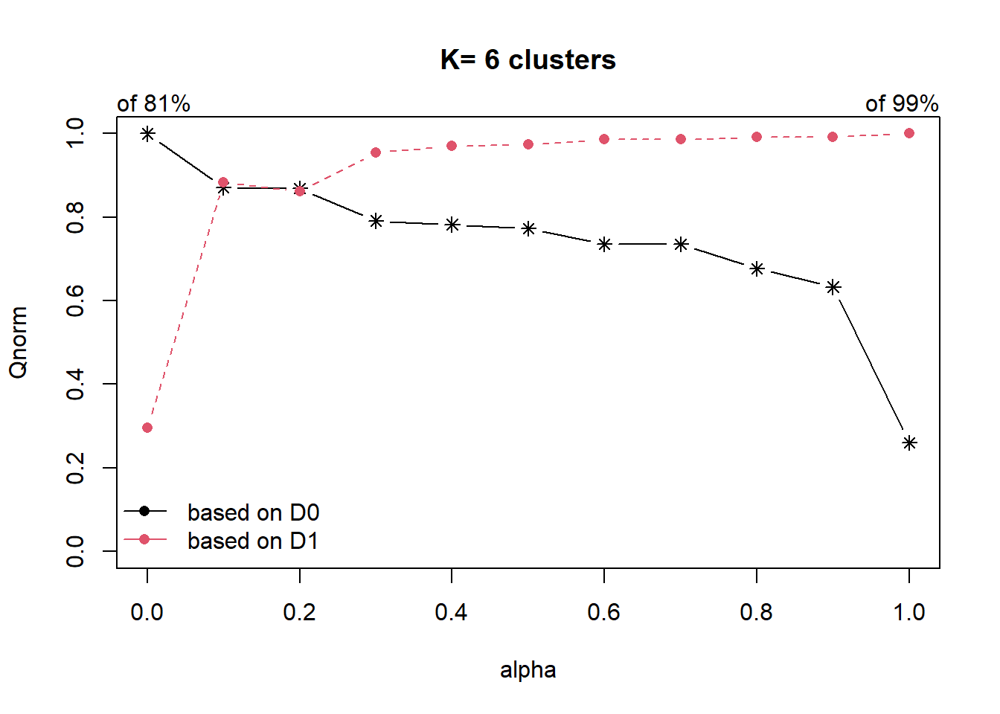
Using choicealpha, I generate a plot that helps select the optimal balance (alpha) between geographic distance and attribute-based clustering, aiding in refining clusters by integrating spatial proximity.
clustG <- hclustgeo(proxmat, distmat, alpha = 0.2)This command performs spatially constrained clustering with a specific alpha value (0.2), balancing geographic and attribute-based clustering. In Shiny, users will select K value and year for visualizing clusters under different constraints.
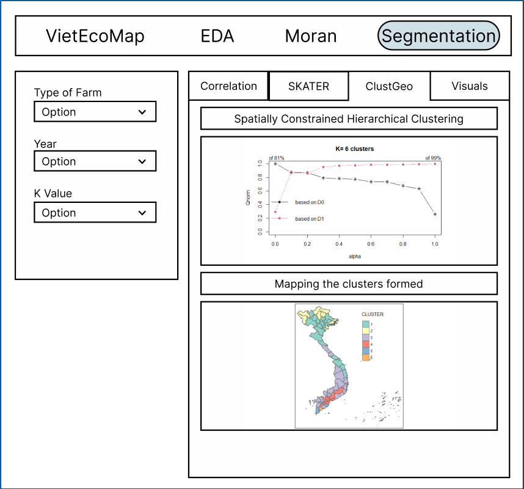
groups <- as.factor(cutree(clustG, k=6))vietnam_farm_Gcluster <- cbind(vietnam_farm, as.matrix(groups)) %>%
rename(`CLUSTER` = `as.matrix.groups.`)After assigning clusters based on K=6, this code binds cluster groupings to the data, allowing each province to be categorized by its cluster number.
qtm(vietnam_farm_Gcluster, "CLUSTER")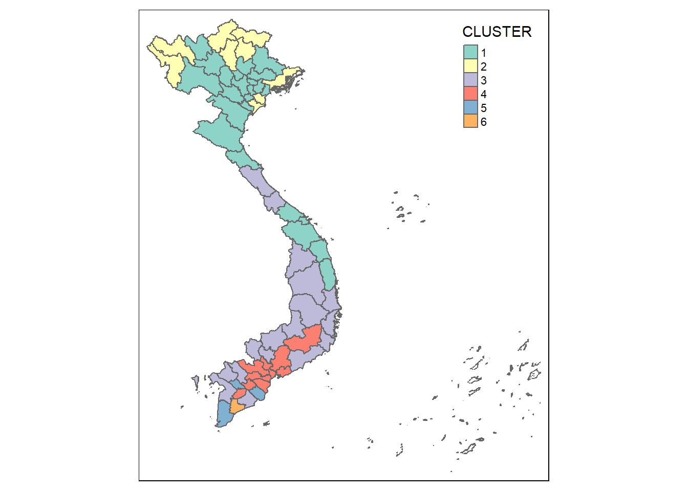
The qtm map of CLUSTER displays the spatially constrained hierarchical clustering for each province, allowing users to examine cluster distributions in Shiny with selectable year and cluster parameters.
Visual Interpretation of Clusters
When designing the Shiny UI, I will include variable: year and variable: K value to give users flexibility in examining clustering results across years and different cluster groupings.
ggplot(data = vietnam_farm_ngeo_cluster, aes(x = CLUSTER, y = `X2012.Cultivation.PR`)) + geom_boxplot()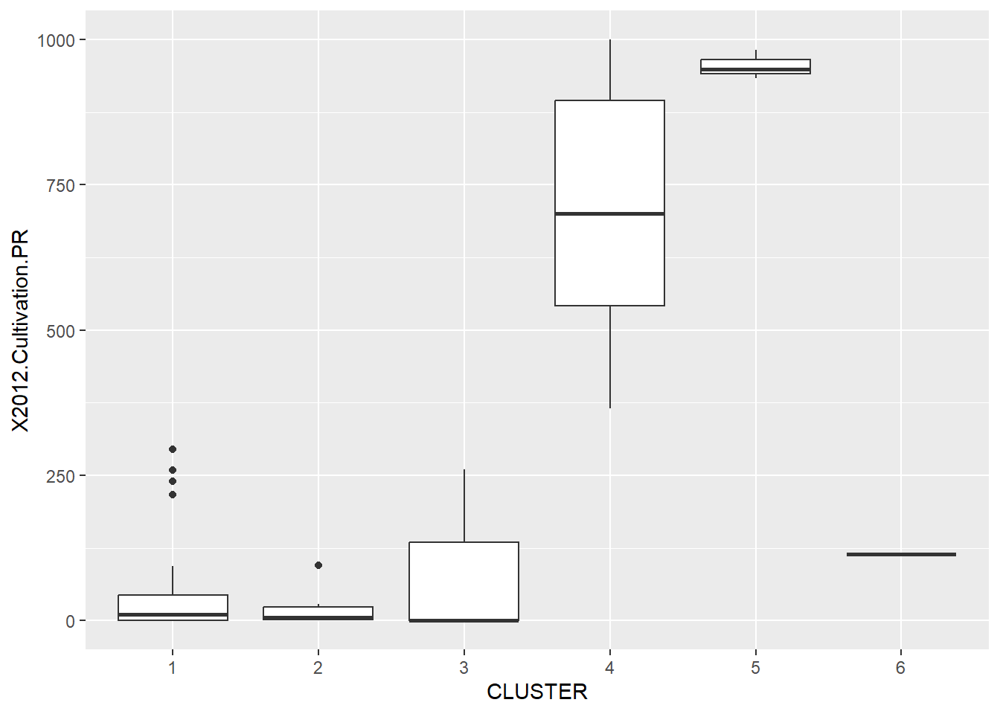
This boxplot shows the distribution of Cultivation PR within each cluster for the year 2012, providing insights into how similar or varied the clusters are in terms of cultivation proportions. In Shiny, users can adjust K values and years to explore how clusters relate to different farm indicators.
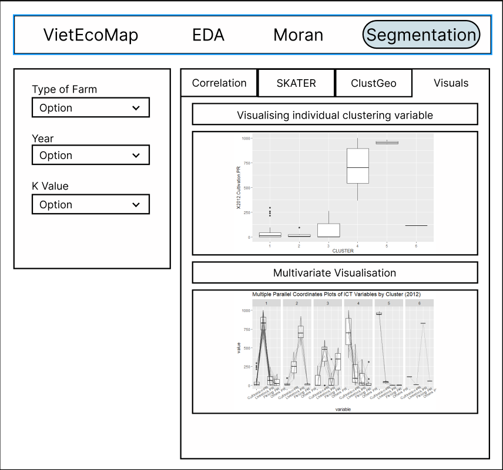
Multivariate Visualisation
In the Shiny UI, I will include variable: year, K value, and the option to explore farm indicators across clusters for multivariate analysis.
ggparcoord(data = vietnam_farm_ngeo_cluster,
columns = c(62:65),
scale = "globalminmax",
alphaLines = 0.2,
boxplot = TRUE,
title = "Multiple Parallel Coordinates Plots of ICT Variables by Cluster (2012)") +
facet_grid(~ CLUSTER) +
theme(axis.text.x = element_text(angle = 30)) +
scale_x_discrete(labels = c(
"X2012.Cultivation.PR" = "Cultivation PR",
"X2012.Livestock.PR" = "Livestock PR",
"X2012.Fishing.PR" = "Fishing PR",
"X2012.Others.PR" = "Others PR"
))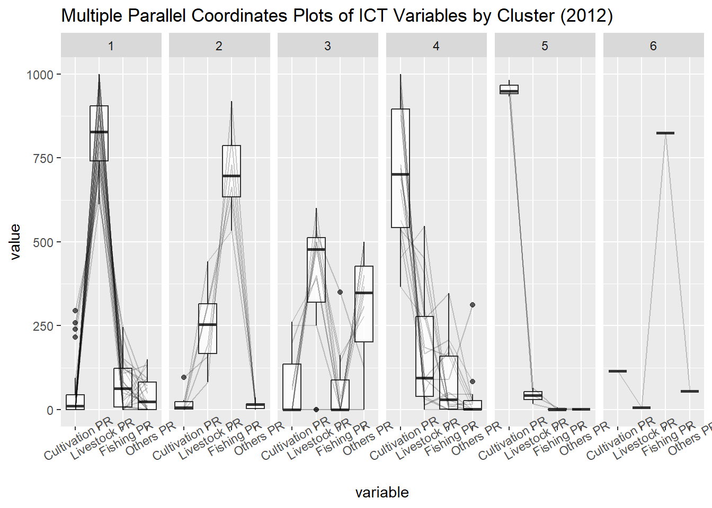
Using parallel coordinate plots, this visualization allows users to view multiple farm indicators across clusters, with variables standardized on a global min-max scale. In Shiny, users can interactively explore these multivariate relationships by adjusting year and K values, gaining insights into how different farm types are distributed across clusters.